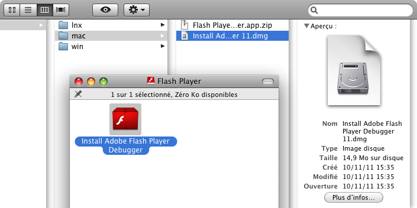
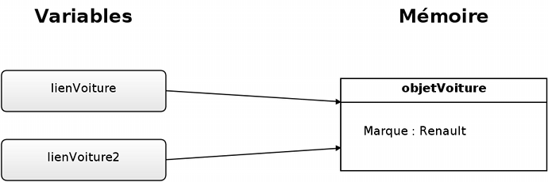

Vous aimeriez apprendre à programmer en Actionscript 3.0 ? Ce cours vous guidera pas à pas dans l'apprentissage de ce langage !
Bonjour à tous, amis Zéros !
Depuis plusieurs années, Flash s'est répandu sur le net et est maintenant quasi-omniprésent (pour le meilleur et pour le pire diront certains :D ) : de nombreuses animations, jeux colorés, publicités, vidéos et musiques embellissent une majorité des sites web. Une grande partie de ces animations est réalisée à l'aide de Flash, une technologie d'Adobe Systems.
Ce tutoriel vous propose de découvrir Flash, pour ensuite apprendre à programmer en Flash à l'aide de l'Actionscript 3 !
Au fait, que peut-on faire avec l'Actionscript ?
Depuis la version 3.0, l'Actionscript est devenu un langage de programmation à part entière, détaché des logiciels d'Adobe (notamment Flash Pro). Au départ, Flash a été conçu pour créer des animations vectorielles, aujourd'hui principalement utilisées dans la publicité en tant que bannières, ou pour embellir et dynamiser des sites web. Il est également possible de concevoir un site 100% Flash pour un maximum de dynamisme et d'interactivité. De plus, de récentes avancées dans le domaine de l'accélération matérielle par la carte graphique permettent de créer des jeux ou des applications en 3D complexe (l'Unreal Engine - Mass Effect, Borderlands 2, Batman, Gears of War... - a même été porté sur Flash Player) ! Avec l'arrivée des composants Flex, vous pouvez créer simplement des applications en ligne visuellement très avancées ! Enfin, avec Adobe Air, vous pouvez créer de véritables logiciels de bureaux en Actionscript 3 ou en HTML/CSS/Javascript ; ces applications sont également compatibles avec les principaux systèmes d'exploitation mobiles, comme iOS, Android ou BlackBerry 10, et les téléviseurs.
Avec un seul langage, vous pouvez réaliser toutes sortes d'applications et d'animations, pour le web, la bureautique, les mobiles, les téléviseurs...
Il ne vous reste plus qu'à vous lancer dans cette aventure !
Pour commencer ce cours en douceur, voici une petite introduction pour vous présenter la technologie Flash, ainsi que son langage de programmation principal, l'Actionscript 3 !
Pour ceux qui ne connaîtraient pas ses possibilités, nous verrons ce qu'il est possible de faire en Flash, ainsi que les différentes utilisations de celui-ci. Nous essaierons également de présenter les technologies Flex et Air, qui peuvent servir à enrichir Flash. Quelques exemples de projets Flash vous seront donnés afin que vous puissiez vous faire une idée des possibilités liées à l'Actionscript.
Ce chapitre d'introduction ne présente aucune difficulté, même si vous êtes un parfait débutant en programmation. Je vous rappelle que ce cours est rédigé avec une difficulté progressive, aussi contentez-vous de lire celui-ci à votre rythme !
Flash est une technologie actuellement développée et soutenue par Adobe Systems (prononcez "adobi").
Elle est principalement utilisée pour afficher des animations dynamiques et interactives dans des pages web, à travers le navigateur Internet. Elle permet par exemple d'ajouter une vidéo ou un jeu sur son site web, animer une galerie d'images, proposer une interface dynamique pour un service ou un logiciel en ligne (comme par exemple Photoshop Express).
Un document Flash est un fichier sous le format swf (Shockwave Flash), et vous en avez sûrement ouvert plusieurs à chaque visite sur le web : en effet, ces animations Flash, couramment utilisées sur Internet, sont un assemblage d'images, de textes, de dessins et de sons pouvant s'animer et même interagir avec vous.
Parmi ses concurrents, on peut citer Silverlight de Microsoft ou encore Java de Sun/Oracle. L'HTML5 couplé avec le CSS3 est une nouvelle alternative standardisée à ces animations, ne nécessitant pas de plug-in dans le navigateur. Les spécifications de l'HTML 5 ne sont malheureusement pas encore finalisées à l'heure actuelle. Je vous encourage à lire le tutoriel du Site du zéro sur l'HTML 5 et le CSS3 si vous vous sentez l'âme d'un webdesigner !
Un peu d'histoire
Flash n'est pas aussi récent que l'on pourrait le croire, car son ancêtre direct a vu le jour en 1995 et est sorti un an plus tard : il s'agit de FutureSplash Animator, un concurrent de Macromedia Shockwave à cette époque (un autre format multimédia orienté vers le web). FutureSplash a été développé par FutureWave Software, une compagnie à l'origine de SmartSketch, un logiciel de dessin vectoriel dont il manquait la composante animation, contrairement à Shockwave.
Son succès amena Macromedia à racheter FutureSplash Animator en décembre 1996, pour le renommer en Macromedia Flash, contraction de Future et Splash. En 2005, Adobe Systems acquiert Macromedia ; le développement de Flash continue pour aboutir à une évolution majeure de la technologie avec la sortie en 2007 de CS3 (Creative Suite 3) : c'est la naissance de l'Actionscript 3 et de Flash 9.
Depuis, Adobe travaille à l'amélioration du lecteur Flash, avec notamment la sortie en 2008 de la dixième version de Flash apportant quelques nouveautés et un début de support de l'accélération matérielle, pour obtenir de meilleures performances. En 2011, une onzième version majeure apporte une nouveauté très attendue : le support intégral de l'accélération matérielle par la carte graphique, ouvrant la voie à de nouveaux contenus en 3D complexe. Le fameux moteur de jeux vidéo d'Epic Games, l'Unreal Engine 3, a d'ailleurs été porté sur la plate-forme Flash !
Adobe cherche maintenant à faciliter l'utilisation de sa technologie sur les autres appareils multimédias, et on peut désormais développer en Flash sur un téléphone portable fonctionnant sous Android de Google, iOs d'Apple ou BlackBerry 10 de RIM, sur des tablettes tactiles, et même sur des télévisions !
Les dérivés de Flash
La plupart des professionnels se servent du logiciel Flash Professionnal d'Adobe, mais il existe d'autres façons d'utiliser cette technologie. Voici les deux principales : la première utilise un autre langage tandis que la deuxième est en quelque sorte une extension de l'Actionscript 3.
Flex
Flex est un logiciel jumeau de Flash Professionnal, orienté développement et design d'applications. Il permet principalement de combler une lacune, si on peut dire, de Flash en termes de création d'interfaces utilisateur. C'est pourquoi celui-ci propose une grande collection de composants préconçus faciles à manipuler tels que des boutons, des champs de texte, etc. Les développeurs peuvent ainsi concevoir très rapidement une interface utilisateur pour des programmes qui ne nécessitent pas toute la puissance de dessin de Flash. Flex utilise principalement un autre langage inventé par Macromédia : le MXML (MacromediaExtensibleMarkupLanguage), une variante du langage très connu qu'est le XML. Le MXML est utilisé pour décrire la structure visuelle d'une application, de la même façon que pour écrire une page web avec l'HTML (lui aussi basé sur le XML) ; on place alors des balises représentant les composants du programme, tout en les mettant en forme. Ensuite, l'Actionscript s'ajoute au XML dans une balise <mx:Script> et permet de manipuler et d'animer les balises MXML, ainsi qu'interagir avec l'utilisateur par exemple.
Pour obtenir plus d'informations, vous pouvez jeter un coup d'œil au tutoriel Flex de Migs.
Air
Adobe Air est une variante de Flash, permettant à n'importe quelle animation créée avec Flash ou Flex de s'installer et de fonctionner comme une véritable application. Grâce aux nombreuses nouvelles fonctionnalités et outils qui sont à votre disposition lorsque vous programmez une application Air, vous pouvez gérer le système de fichiers de l'ordinateur ou les disques amovibles, créer des bases de données, monter un serveur... Ainsi, peut-on programmer un traitement de texte ou encore un logiciel de messagerie instantanée, voire un navigateur Internet avec Flash.
Une autre particularité de cette plate-forme ressemblant à Flash, est que, en plus du MXML et de l'Actionscript 3, on peut utiliser uniquement du simple HTML, CSS et Javascript pour créer de telles applications ; Air utilise alors le moteur Webkit (utilisé par Chrome et Safari entre autres) pour afficher ces éléments de pages web dans les applications. Ceci représente un avantage non négligeable pour les développeurs web voulant programmer des applications de bureau, sans toutefois avoir à apprendre et maîtriser un autre langage de programmation !
Enfin, c'est Air qui permet aux développeurs Flash de créer des applications à destination de mobiles comme l'iPhone, sur les tablettes tactiles ou encore sur les téléviseurs, et cela depuis 2010 avec la sortie d'Air 2.5.
Présentation d'Adobe AIR 2.5, un dérivé de Flash.
Une partie du cours sera consacrée à l'utilisation de cet outil, et vous pourrez donc vous exercer à créer un véritable logiciel avec Flash.
Pour bien cerner les possibilités de Flash et bien différencier les différentes variantes de cette technologie, voici rien que pour vous quelques exemples illustrés.
Lire du Flash
Le dynamisme apporté au web par l'Actionscript
Il est probable que la première fois que vous ayez entendu parler de Flash soit en jouant à divers jeux sur le Web. En effet, il existe de nombreux sites web proposant des jeux flash. Bien entendu, ceux-ci sont réalisés en Flash à l'aide du langage Actionscript. Pour vous donner un exemple concret, je vous ai sélectionné un jeu nommé Kingdom Rush dont un aperçu est donné ci-dessous :
Un jeu réalisé en Flash : Kingdom Rush.
Création de sites web orientés vers le visuel
La technologie Flash est aussi grandement utilisée dans la conception des sites web eux-mêmes. En général, les animations Flash sont plutôt réservées aux sites web statiques ou sites-vitrines. Ceux-ci sont très appréciés pour leurs interactions et leurs animations qui dynamisent énormément la navigation : il est important, notamment pour les sites commerciaux à destination du grand public, d'attirer le regard. Toutefois, il est tout à fait possible de créer des sites web dynamiques, et interagir avec un serveur grâce au langage PHP par exemple. Pour que vous puissiez mieux vous faire une idée de la chose, je vous propose d'aller visiter le site de la nouvelle série de Canal+ : Carlos.
Le site de la série Carlos est réalisé en Flash.
Introduction d'Adobe Air
Comme nous le verrons dans le prochain chapitre, l'utilisation de la technologie Flash nécessite un lecteur spécifique nommé Flash Player. Celui-ci est très répandu à l'intérieur des navigateurs Internet, et l'utilisation de Flash s'est ainsi longtemps limitée au web. Heureusement ceci n'est plus le cas avec l'arrivée d'Adobe Air. En effet, cette technologie vient ajouter de nouvelles fonctionnalités à Flash et permettre l'utilisation de Flash hors-ligne en tant que programme. Pour vous donner un exemple, l'application Flash du site de poker Winamax, disponible initialement sur navigateur Internet, a pu être convertie en vrai logiciel grâce à la technologie Adobe Air.
Le logiciel Winamax utilise la technologie Air.
Ainsi l'utilisation d'Adobe Air permet de porter les applications directement sur un système d'exploitation. Notamment cette technologie est actuellement utilisée par de nombreux systèmes d'exploitation mobiles tels que l'iOS, Android ou BlackBerry 10.
Créer du Flash : le logiciel Adobe Flash Professional
Avant de passer à la suite, nous allons parler un peu du logiciel d'Adobe nommé Flash Professional. Il faut savoir que l'Actionscript n'est pas le seul moyen de concevoir une animation Flash. En effet, le logiciel Flash Professional permet de réaliser des animations Flash à l'aide d'outils graphiques, qu'il est éventuellement possible d'enrichir à l'aide d'un langage : l'Actionscript ! Ainsi pendant longtemps, le logiciel d'Adobe était le seul moyen de créer des animations Flash. C'est pourquoi on a souvent tendance à confondre la technologie qu'est le Flash avec le logiciel d'Adobe souvent abrégé Flash. Cependant depuis l'arrivée de la version 3.0 du langage Actionscript, de nouveaux outils de développement ont vu le jour, et il est maintenant possible de réaliser des animations Flash sans avoir besoin de se procurer le logiciel Flash Professional.
Le logiciel Adobe Flash Professional dans sa version CS4.
Adobe Flash Professional est un logiciel assez complet et complexe, qui nécessiterait plusieurs chapitres pour arriver à le prendre en main. D'autre part, la dernière version du logiciel CS6 est estimée à 955,60€ et n'est donc pas abordable lorsqu'on débute en programmation. C'est pourquoi nous avons fait le choix, dans ce cours, de vous présenter des logiciels gratuits et donc accessibles à tous !
L'Actionscript est le langage de programmation servant à faire fonctionner les animations Flash ; c'est le plus utilisé parmi les langages de Flash. Il est basé sur l'ECMAscript, à l'instar du Javascript utilisé sur Internet, directement dans les pages web. Sans lui, aucune animation ou interaction dans un fichier Flash ne serait possible, et celui-ci serait alors réduit à une bête image fixe.
L'Actionscript est un langage orienté objet, de haut niveau et événementiel.
Orienté objet
En effet, sa structure est basée sur le concept d'objet, c'est-à-dire que tous les éléments de l'animation (y compris ceux qui ne relèvent pas de l'affichage, comme par exemple les nombres) sont des objets, avec des attributs et des méthodes qui leur sont attachés. Chaque objet est décrit par une classe : un ensemble d'attributs et de méthodes qui représentent son comportement.
Prenons comme exemple une voiture de sport : c'est un objet qui a pour classe Voiture, c'est-à-dire qu'elle a par exemple un attribut vitesse qui nous permet de connaître sa vitesse de déplacement, ou encore une méthode tourner à gauche, qui la fait tourner. Tous ces attributs et ces méthodes sont décrits et expliqués dans la classe Voiture.
S'il nous prenait l'envie de programmer un jeu de course de voitures basique, il faudrait d'abord écrire une classe Voiture, puis sur le fichier principal créer un nouvel objet de la classe Voiture pour créer une voiture (et ensuite la déplacer par exemple).
Une partie toute entière sera également consacrée à la programmation orientée objet, ne vous en faites pas si vous n'arrivez pas à tout bien saisir maintenant. ;)
De haut niveau
L'Actionscript est un langage dit de haut niveau, c'est-à-dire que son fonctionnement est très éloigné du fonctionnement de l'ordinateur au niveau matériel, au contraire des langages dit de bas niveau, proches de la machine (comme le langage C).
Généralement, cela signifie qu'il est plus facile de réaliser certaines choses ou qu'il faut moins d'instructions, mais cela se traduit souvent par des performances plus faibles.
Le Java, le Python ou le Ruby sont d'autres exemples de langages de haut niveau.
Évènementiel
Enfin, c'est un langage évènementiel, c'est-à-dire que l'interactivité de vos programmes sera basée sur des événements que nous allons écouter. Par exemple, pour utiliser un bouton, nous allons écouter (donc attendre) sur lui l'événement « cliqué » qui sera déclenché lorsque l'utilisateur appuiera sur ce bouton. Bien sûr, pendant ce temps, nous pouvons faire autre chose : c'est tout l'intérêt de ce système.
En résumé
L'Actionscript est un langage interprété, il a donc besoin d'un interpréteur (le lecteur Flash) pour être exécuté.
La technologie Flash regroupe les programmes Flash classiques, les applications Flex que l'on peut trouver sur des pages web, ainsi que les applications AIR à destination du bureau ou d'autres appareils comme les mobiles.
Le principal langage utilisé dans ces programmes est l'Actionscript 3, mais on peut aussi utiliser le MXML (pour Flex et AIR), voire l'HTML et le Javascript (pour les applications AIR uniquement).
L'Actionscript 3 est un langage de haut-niveau : son fonctionnement est éloigné de la machine et il est en général plus facile d'implémenter des fonctionnalités complexes.
C'est aussi un langage orienté objet : son fonctionnement est basé sur des concepts d'objets et de classes.
Enfin, c'est un langage événementiel : on écoute des objets, et si des événements surviennent, on peut exécuter du code.
Maintenant que vous en savez un peu plus sur Flash, il est grand temps de passer à la pratique et l'essentiel de ce cours : l'Actionscript 3 ! Vous aurez besoin d'outils pour suivre ce cours et appliquer ce que vous apprendrez (c'est très important), mais ne vous inquiétez pas, tous sont gratuits.
Le compilateur, qui servira à transformer votre code en animation est effectivement gratuit pour tout le monde, et il existe même une version open-source ! Il s'agit de Flex SDK, qui fait parti du projet Adobe Open Source.
Nous utiliserons également un logiciel pour nous aider à coder et à compiler nos projets, disponible hélas que sous Windows pour l'instant.
Un compilateur est un programme très utile dans la plupart des langages de programmation. En réalité, vous vous doutez bien que l'ordinateur ne sait pas interpréter directement le code que nous lui écrivons : en effet, les langages de programmation ont été conçus pour être facilement utilisables par les êtres humains comme vous et moi. Or les ordinateurs ne comprennent que les instructions en binaire de bas niveau (cf. chapitre précédent). Il faut donc traduire nos programmes grâce au compilateur !
Mais alors, pourquoi doit-on compiler nos programmes écrits en Actionscript ?
En Actionscript 3, la compilation vous donne des informations sur vos erreurs de syntaxe pour que vous les corrigiez plus facilement, mais elle permet surtout de rassembler tout votre code et le contenu nécessaire au bon déroulement de votre programme (comme les librairies) dans un seul fichier. Ainsi, il est plus facile d'intégrer une animation Flash dans un site web, et il devient possible d'importer directement dans l'animation des images, des sons, des polices de caractères ou d'autres médias qui seront chargés en même temps que votre programme. En outre, le compilateur compresse votre animation afin qu'elle prenne moins de temps à se charger.
Ainsi, en Flash, le compilateur ne traduit pas votre code en binaire. À vrai dire, ce n'est qu'un demi-compilateur : il ne s'occupe que de lier plusieurs fichiers en un seul (opération appelée Édition de liens), alors que les compilateurs classiques traduisent également le code.
Le fichier qui est produit est en général au format swf (ShockWave Flash) ; c'est lui qui sera chargé par un navigateur Internet par exemple.
Le lecteur Flash
Donc il nous faut un logiciel pour que l'ordinateur comprenne notre code ?
Oui ! C'est là que le lecteur Flash (ou Flash Player en anglais) entre en scène. Ce logiciel contient un ensemble d'outils permettant d'exécuter votre programme : Flash Player est un interpréteur, et l'Actionscript est un langage interprété.
Tout ce processus se déroule à l'intérieur d'une machine virtuelle. Concrètement, Flash Player cache le système sur lequel votre programme tourne et gère lui-même la mémoire et les autres échanges nécessaires au bon déroulement de votre programme. Ainsi, ce dernier peut fonctionner correctement sur plusieurs systèmes d'exploitation (Windows, Mac, Linux, Android...) totalement différents. Entre autres, il dispose d'un compilateur à la volée, ou JIT (Just In Time) qui traduit en temps réel certains passages de votre code en binaire afin d'améliorer les performances.
Ainsi, pour programmer en Actionscript, il nous faut plusieurs outils, dont un compilateur, et un lecteur Flash. Nous allons dès à présent nous occuper de tout cela !
Java
Java est une technologie similaire à Flash, développée initialement par Sun Microsystems (racheté par Oracle), qui regroupe un ensemble d'outils permettant de créer des applications. Or, le compilateur de Flash est écrit en Java : il faut donc que Java soit installé sur votre ordinateur. Si vous êtes certains que c'est déjà le cas, vous pouvez passer à l'étape suivante. Sinon, téléchargez et installez Java en suivant ce lien.
Flex SDK
Le Flex SDK (Software Development Kit) est un ensemble d'outils de développement qui permettent entre autres de compiler des programmes écrits en Actionscript 1, 2 ou 3, et des applications Flex ou AIR.
Tout d'abord, il faut que vous récupériez le SDK sur le site officiel d'Adobe : télécharger Flex SDK. Une fois sur le site d'Adobe, cliquez sur le bouton Fx Download Now, lancez le téléchargement et allez prendre un café ^^ :
Une fois le téléchargement terminé, extrayez l'archive dans un répertoire facilement accessible (votre dossier personnel par exemple) et renommez-le pour simplifier son nom (par exemple, Flex SDK 4).
Vous voilà armés d'un compilateur Flash gratuit ! Mais comment s'en sert-on ? Avec les lignes de commande pardi ! :lol: Pour les utilisateurs de Windows, il est grand temps de renouer une relation avec le terminal ! Pour Mac et Linux en revanche, cela ne devrait pas trop vous poser de problèmes...
Voici la marche à suivre pour lancer un terminal :
Windows : dans le menu démarrer, allez dans Tous les programmes, Accessoires, Invite de commandes, ou appuyez sur Windows+R et entrez cmd puis validez.
Linux : comment ça, vous ne savez pas ouvrir un terminal ? :-° Le gnome-terminal (Gnome) ou la Konsole (KDE) conviendront parfaitement.
Mac : dans le Finder, sélectionnez Applications, puis Utilitaires et enfin Terminal.
Maintenant, il va falloir se placer dans le dossier bin du SDK : utilisez la commande cd (Change Directory) pour vous déplacer dans l'arborescence de fichiers.
WindowsLinuxMac
Version de débogage du lecteur Flash
Un deuxième outil va nous être indispensable : il s'agit d'une version légèrement différente du lecteur Flash habituel que l'on trouve dans les navigateurs Internet par exemple. En effet, ce Flash Player de débogage peut s'exécuter tout seul comme une quelconque application, et dispose surtout de fonctions de débogage très utiles. Par exemple, si un problème survient pendant que l'on teste notre programme, une fenêtre nous affichera les détails de l'erreur, la ligne incriminée et les différents appels de fonctions ayant conduit à cette erreur.
Vous pouvez dès à présent récupérer le lecteur. Il se trouve normalement dans le dossier Flex SDK 4/runtimes/player/11.1 (la version peut varier). Choisissez le lecteur qui convient à votre système, appelé Flash Player Debugger (dans le dossier lnx pour Linux, mac pour Mac et win pour Windows).
Sur Windows
Lancez le fichier FlashPlayerDebugger.exe une fois afin que les fichiers .swf soient automatiquement associés au Lecteur Flash :
Sur Linux
Commencez par extraire l'archive flashplayerdebugger.tar.gz. Pour que son utilisation soit plus facile, et surtout parce que l'on en aura besoin un peu plus loin, vous pouvez déplacer l'exécutable flashplayerdebugger vers le dossier /usr/bin et le renommer en flashplayer :
Une fois le déplacement effectué, relancez votre console et replacez-vous dans le dossier Flex SDK 4/bin.
Sur Mac
Installez le lecteur Flash en double-cliquant sur l'installateur Install Adobe Flash Player Debugger 11.dmg :

Créer les sources
Vu que nous n'avons pas encore attaqué l'écriture de programmes en Actionscript 3, je vous ai concocté un petit code de test, qui va nous permettre de vérifier que votre installation fonctionne bien. ^^
Commencez par créer un répertoire Sources dans le dossier bin, où l'on mettra les sources de nos futurs programmes. Dans le répertoire Sources, créez un nouveau fichier nommé Test.as et copiez-y le code ci-dessous en utilisant un éditeur de texte quelconque, tel que le Bloc-notes si vous êtes sous Windows.
package
{
// Programme de test
// Fichiers nécessaires
import flash.display.BitmapData;
import flash.display.Sprite;
import flash.events.Event;
import flash.events.TimerEvent;
import flash.filters.BlurFilter;
import flash.geom.Point;
import flash.geom.Rectangle;
import flash.ui.Mouse;
import flash.display.Bitmap;
import flash.events.MouseEvent;
import flash.utils.Timer;
// Le code
public class Test extends Sprite {
private var _bmp:Bitmap;
private var _clock:Timer;
private var _lastPosition:Point;
public function Test() {
addEventListener(Event.ADDED_TO_STAGE, Evt_added);
}
private function _init():void {
stage.frameRate = 30;
_bmp = new Bitmap(new BitmapData(stage.stageWidth, stage.stageHeight, false, 0x000000));
_bmp.cacheAsBitmap = true;
_bmp.opaqueBackground = 0x000000;
addChild(_bmp);
_lastPosition = new Point(mouseX, mouseY);
stage.addEventListener(MouseEvent.MOUSE_MOVE, Evt_mouseMoved);
_clock = new Timer(60);
_clock.addEventListener(TimerEvent.TIMER, Evt_frame);
_clock.start();
}
private function _particle():void {
var pX:int = mouseX;
var pY:int = mouseY;
var x0:int = _lastPosition.x;
var y0:int = _lastPosition.y;
var x1:int = pX;
var y1:int = pY;
// Tracé de la ligne (Bresenham)
var error: int;
var dx: int = x1 - x0;
var dy: int = y1 - y0;
var yi: int = 1;
if( dx < dy ){
x0 ^= x1; x1 ^= x0; x0 ^= x1;
y0 ^= y1; y1 ^= y0; y0 ^= y1;
}
if( dx < 0 ){
dx = -dx; yi = -yi;
}
if( dy < 0 ){
dy = -dy; yi = -yi;
}
if( dy > dx ){
error = -( dy >> 1 );
for ( ; y1 < y0 ; y1++ ) {
_bmp.bitmapData.fillRect(new Rectangle(x1 - 4, y1 - 4, 8, 8), 0xffffff);
error += dx;
if( error > 0 ){
x1 += yi;
error -= dy;
}
}
}else{
error = -( dx >> 1 );
for ( ; x0 < x1 ; x0++ ) {
_bmp.bitmapData.fillRect(new Rectangle(x0 - 4, y0 - 4, 8, 8), 0xffffff);
error += dy;
if( error > 0 ){
y0 += yi;
error -= dx;
}
}
}
_lastPosition.x = pX;
_lastPosition.y = pY;
}
private function Evt_added(evt:Event):void {
removeEventListener(Event.ADDED_TO_STAGE, Evt_added);
_init();
}
private function Evt_mouseMoved(evt:MouseEvent):void {
_particle();
}
private function Evt_frame(evt:TimerEvent):void {
_bmp.bitmapData.applyFilter(_bmp.bitmapData, new Rectangle(0, 0, _bmp.bitmapData.width, _bmp.bitmapData.height), new Point(), new BlurFilter(4, 4, 2));
}
}
}
Compiler le programme de test
Pour compiler Test.as, revenez dans le terminal pour lancer le programme mxmlc contenu dans le dossier bin.
Windows
.\mxmlc.exe "Sources/Test.as"
Linux et Max
./mxmlc Sources/Test.as
Ensuite, appuyez sur Entrée pour lancer la compilation :
WindowsLinuxMac
Après quelques instants et si tout s'est bien passé, un fichier Test.swf a été créé dans le dossier Sources ; il vous suffit de l'ouvrir avec le lecteur de débogage que nous avons téléchargé précédemment !
Sur Windows ou Mac
Double-cliquez sur le fichier Test.swf. Si jamais le lecteur Flash ne s'ouvre pas, choisissez-le avec la commande Ouvrir avec... ou dans la liste Sélectionner un programme installé.
WindowsMac
Sur Linux
Entrez dans votre terminal :
flashplayer Sources/Test.swf
Linux
Si votre curseur laisse une traînée blanche et brumeuse, cela signifie que la compilation a réussi et que vous êtes prêts pour passer à la suite ! :)
Nous allons maintenant écrire de A à Z notre premier programme Flash ! :) Commencez par créer un nouveau fichier Actionscript dans le répertoire Source, et nommez-le Hello.as.
Structure de notre programme
Un programme écrit intégralement en Actionscript, ce qui sera le cas durant ce cours, présente toujours la même structure : le code est obligatoirement mis dans des fonctions, elles-mêmes placées dans une classe, englobée par un paquet (on utilise alors le mot anglais package). Pour l'instant, il y a de grandes chances que les trois termes que je viens d'utiliser soient obscurs pour vous ; la seule chose importante à retenir est l'organisation de ces trois niveaux qui composent le code source de tout fichier Actionscript. Pas de panique : nous explorerons plus en détails chacune de ces notions plus tard dans le cours. ;)
Voici un petit schéma récapitulatif :
Le package
Commençons par le plus simple : le package. Il est composé d'un nom facultatif et d'un bloc d'accolades. Nous utilisons le mot-clépackage comme ceci :
package nom {
}
Le nom du package décrit la position de la classe dans l’arborescence des fichiers de votre projet. Effectivement, vous ne pouvez choisir vous-mêmes le nom du package : vous devez mettre le chemin relatif du fichier par rapport au fichier principal (celui que l'on compile avec la commande mxmlc vue plus haut), en séparant les dossiers par des points (à la place des slashes ou antislashes).
Par exemple, si votre fichier principal Hello.as se trouve dans le dossier source, et que vous créez un nouveau dossier ET dans lequel vous rajoutez un dossier telephoner, en y mettant un fichier Actionscript Maison.as qui est utilisé par votre programme principal, vous devrez écrire son package ainsi :
package ET.telephoner {
}
L’arborescence des fichiers est alors Sources/ET/telephoner/Maison.as.
Comment cela, on peut utiliser un autre fichier Actionscript depuis notre programme principal ?
Bien sûr ! C'est même très utile : il vaut mieux faire plusieurs fichiers bien triés (un dossier pour les utilitaires, un dossier pour le chargement de son...), que tout mettre dans un seul et unique fichier. Imaginez que votre programme fasse plusieurs centaines de milliers de lignes de code : il vous sera impossible de vous y retrouver ! :lol: Nous allons voir cette notion appelée importation de fichiers dans très peu de temps.
Qu'en est-il de notre fichier Hello.as ?
Très bonne question : pour le programme principal contenu dans le fichier que vous allez compiler avec la commande mxmlc, il n'y a pas de nom de package ! Et oui, il est déjà dans le dossier principal de votre projet, inutile donc de mettre un chemin.
Dans ce cas, le package s'écrit ainsi :
package {
}
Vous pouvez écrire ce code dans votre fichier vide si vous ne l'avez pas déjà fait ! ;)
Importer des fichiers Actionscript
Comme nous l'avons vu, importer des fichiers peut s'avérer très utile, voire vital dans la plupart des cas. L'importation est une instruction (ou une ligne de code si vous préférez) qui permet de rendre tout le code du fichier importé utilisable dans notre code. Il y a deux types de fichiers que vous pouvez importer : les fichiers contenus dans les packages de Flash (commençant par flash.), et vos propres fichiers. Dans les deux cas, on utilise le mot-clé import suivi du package du fichier à importer, son nom et un point-virgule :
import ET.telephone.Maison;
Les importations s'écrivent juste après avoir ouvert la première accolade du package :
package {
import ET.telephone.Maison;
}
Pour notre programme, il va falloir importer un fichier standard de Flash : Sprite. Il est nécessaire pour toute application : nous détaillerons son utilité bien plus tard dans le cours, car il nous manque trop de notions actuellement. ;) Je peux tout de même vous dire que cela nous permet d'afficher le programme, et donc de le lancer : effectivement, tout programme Flash a besoin d'un affichage pour s'exécuter.
Je vous donne le code du fichier importé que vous devez avoir dans votre Hello.as :
package {
import flash.display.Sprite;
}
La classe
Ensuite, vient la... Comment ça vous ne savez pas ? Retournez vite regarder le schéma juste au-dessus ! :colere2: Effectivement, dans le package, on trouve une classe. Cette notion est un concept très important de la programmation orientée objet que j'ai mentionné dans l'introduction. Encore une fois, il est trop tôt pour développer cette notion, mais rassurez-vous : une partie entière de ce cours est consacrée à l'orienté objet.
L'essentiel est de retenir que la classe est obligatoire et que sa syntaxe est la suivante : les mots-clés public class suivis du nom de la classe et d'un bloc d'accolades, comme pour le package.
public class NomDeMaClasse {
}
Étant donné que le nom du fichier est le même que celui de la classe de ce fichier, nous parlerons désormais de classe dans les deux cas.
La classe se dispose juste après les importations de fichiers, comme ceci, pour notre fichier Hello.as :
package {
import flash.display.Sprite;
public class Hello extends Sprite {
}
}
Les plus observateurs d'entre vous auront remarqué que j'ai ajouté deux mots derrière le nom de notre classe. Le mot-clé extends (étendre en anglais) permet d'utiliser la classe Sprite d'une manière un peu spéciale, comme nous le verrons dans la partie consacrée à l'orienté objet.
Les fonctions
Maintenant que notre classe est prête, il faut écrire une ou plusieurs fonctions pour pouvoir mettre du code dedans ! Une de ces fonctions est obligatoire, et elle porte un nom : il s'agit du constructeur de la classe. Devinez quoi ? C'est encore lié à l'orienté objet ! :lol: Pour faire simple, ce constructeur est automatiquement exécuté dans certains cas, lorsque l'on utilise une classe. Ici, le code à l'intérieur sera parcouru au lancement de notre programme. Pour écrire un constructeur, on utilisera les mots-clés public function suivis du nom de la classe, de parenthèses et d'un nouveau bloc d'accolades.
Pour notre classe Hello contenue dans notre fichier Hello.as, le constructeur ressemblera à ceci :
public function Hello(){
}
Et voilà ! Notre fichier est fin prêt pour que nous commencions (enfin) à coder !
Voici le code complet de notre fichier Hello.as pour que vous puissiez vérifier :
// Premier niveau : le paquet
package {
// Les classes importées
import flash.display.Sprite;
// Deuxième niveau : la classe du fichier
public class Hello extends Sprite {
// Troisième niveau : la ou les fonctions
// Constructeur de la classe
public function Hello() {
// Nous allons coder ici !
}
}
}
Commentez votre code !
Avez-vous remarqué que j'ai inséré du texte en français dans le code précédent, qui n'a a priori rien à faire là ? On appelle cela des commentaires. Vous pouvez y écrire absolument n'importe quoi, et pour cause : ils seront tout simplement ignorés lorsque vous lancerez votre programme. Vous vous demandez alors à quoi servent-ils ? La réponse est plutôt simple : commenter un code permet de s'y retrouver, même si nous avons nous-mêmes écrit le code en question. Imaginez que vous reveniez dessus quelques mois plus tard : s'il n'y a aucun commentaire, vous serez aussi perdu que si ce n'était pas vous le programmeur ! Cela peut même arriver dans un intervalle de quelques jours seulement. Et ce serait encore pire si vous souhaitiez que votre code soit lu ou utilisé par d'autres personnes... Mais attention, il ne s'agit pas non plus d'inonder votre code dans les commentaires : vous ne réussiriez qu'à le rendre encore plus illisible et incompréhensible ! Il faut trouver un juste milieu : commentez quand cela est nécessaire, pour décrire brièvement ce que fait un bout de votre programme, afin de vous en rappeler facilement plus tard.
Il existe deux types de commentaires : les commentaires en ligne et les commentaires multi-lignes.
Les commentaires en ligne
Ce sont des commentaires qui ne comportent qu'une seule ligne. On les débute par deux slashes, comme ceci :
// Voici un commentaire en ligne
Tout le texte suivant les deux slashes sera considéré comme du commentaire.
Vous pouvez mettre un commentaire en fin de ligne, sans gêner personne :
import display.Sprite; // Pour l'affichage
Les commentaires multi-lignes
Cette fois-ci, il est possible d'étaler notre commentaire sur plusieurs lignes. Pour cela, il faut débuter notre commentaire par un slash et une astérisque, et terminer explicitement le commentaire par une astérisque et un slash :
/* Ceci
est un commentaire
sur quatre
lignes. */
Afficher un message dans la console
Avant toute chose, il est important de souligner que la technologie Flash n'a jamais été conçue pour être utilisée en lignes de commande : en effet, son objectif est de proposer des applications et des animations entièrement graphiques. Cela implique que l'on ne puisse qu'afficher du texte à la console (avec quelques efforts), et qu'il est impossible d'entrer des données au clavier via la console, comme en langage C par exemple.
C'est une fonction qui nous permettra d'afficher des messages dans la console : elle répond au doux nom de trace(), et est quasiment exclusivement utilisée pour le débogage des programmes Flash.
Cette fonction est accessible partout dans tout code Actioncript, sans rien à faire d'autre que de l'appeler.
L'appeler ? Comme mon chien pour partir en balade ?
Oui, on utilise le terme appeler lorsque l'on utilise une fonction : nous n'allons pas écrire du code entre les accolades de la fonction trace(), nous allons nous contenter de l'utiliser. En effet, son code est déjà prêt et fait partie du Lecteur Flash lui-même !
Pour l'utiliser, nous allons prendre presque la même syntaxe que celle du constructeur Hello (qui est lui aussi une fonction), sans le bloc d'accolades, et sans oublier le point-virgule (car il s'agit d'une instruction) :
trace("texte à afficher");
Entre les deux parenthèses, vous devez spécifier à la fonction trace() ce qu'elle doit afficher. Ce peut être du texte (délimité par des guillemets) ou un nombre. Par exemple, pour afficher 42 dans la console, nous écririons :
trace(42);
À vous de jouer ! Faites en sorte sans le tester que votre programme Hello soit capable d'afficher le grand classique « Hello world ! ». Souvenez-vous où il faut mettre les instructions dans le programme Hello que nous avons écrit jusqu'à présent ! ;)
// Premier niveau : le paquet
package {
// Les classes importées
import flash.display.Sprite;
// Deuxième niveau : la classe du fichier
public class Hello extends Sprite {
// Troisième niveau : la ou les fonctions
// Constructeur de la classe
public function Hello() {
trace("Hello world !");
}
}
}
Place au test !
Compiler notre programme
Commençons tout d'abord par compiler Hello.as. Il y a une petite différence par rapport à tout à l'heure : cette fois-ci, il va falloir activer le mode débogage lors de la compilation, pour que l'on puisse afficher le message « Hello world ! » dans la console. Pour ce faire, ajoutons un paramètre lors de la compilation : -debug=true.
Sur Windows :
.\mxmlc.exe -debug=true "Sources/Hello.as"
Sur Linux :
./mxmlc -debug=true "Sources/Hello.as"
Et enfin, sur Mac :
./mxmlc -debug=true Sources/Hello.as
Si tout c'est bien passé, votre console devrait afficher quelque chose comme ceci :
Lancer le débogueur Flash
Pour pouvoir afficher les messages de la fonction trace(), il nous faut utiliser un autre outil à notre disposition : le débogueur Flash. En effet, Flash Player, même en version de débogage, ne peut pas afficher des messages en continu dans une console. Il se contente de les envoyer : le débogueur va alors se charger de récupérer les messages et de nous les présenter dans la console. Il s'agit du programme fdb qui devrait être dans le répertoire Flex SDK 4/bin :
Lancez le programme dans votre console :
Sur Windows :
.\fdb.exe
Sur linux :
./fdb
Sur Mac :
./fdb
Un nouvel invité de commande, géré par fdb devrait apparaître :
Lancer notre programme
Tout d'abord il faut lancer une session de débogage, pendant laquelle le débogueur essayera de récupérer les messages de débogage du Lecteur Flash :
run
Le débogueur est ainsi en attente du Lecteur Flash : lancez votre programme en double-cliquant dessus, ou avec la commande que l'on a vu plus haut dans le cas de Linux. Le Lecteur Flash n'est cependant pas encore démarré, il ne devrait donc pas se passer grand-chose à l'écran. ^^
Une fois que la session est correctement démarrée, entrez cette commande dans fdb pour réellement lancer le programme :
continue
Miracle ! Notre trace("Hello world !"); a fonctionné, et le message est apparu dans la console ! :magicien:
Une fenêtre blanche s'est ouverte : il s'agit de notre animation ! Pour l'instant, elle ne fait presque rien : nous remédierons à cela dans la suite du cours. ;)
Vous pouvez maintenant fermer votre programme. Si plus tard vous voulez quitter fdb, entrez cette commande :
quit
Vous pouvez également lister l'intégralité des commandes du débogueur avec cette commande :
help
Il en faut des efforts pour déboguer en lignes de commande, mais une fois que vous avez pris le coup de main, c'est plus facile. ;) Mais pour se faciliter la vie, mieux vaut s'équiper avec les meilleurs outils ! En effet, il existe des éditeurs de code très facile d'utilisation qui intègrent également des outils prêts à l'emploi pour compiler et tester nos programmes !
Pour Windows, il existe un très puissant éditeur pour programmer en Flash, et de plus, il est gratuit et libre : j'ai nommé Flashdevelop ! Flashdevelop est ce que l'on appelle un IDE (Integrated Development Environment, environnement de développement intégré en anglais) : c'est un logiciel contenant tout le nécessaire pour programmer dans un ou plusieurs langages (ici l'Actionscript, mais pas seulement). Vous allez voir : compiler sera désormais aussi simple que d'appuyer sur un bouton !
Téléchargement
Flashdevelop est donc disponible au téléchargement gratuitement, mais malheureusement la version officielle est réservée aux utilisateurs de Windows. Commencez par télécharger Flashdevelop à cette adresse. Il est possible, pour les utilisateurs d'un autre système d'exploitation d'utiliser une machine virtuelle, tant que les développeurs n'auront pas eu le temps d'adapter Flashdevelop à d'autres supports. Il existe également une alternative, sous forme d'un plugin pour le logiciel Eclipse. Rassurez-vous, le reste du cours ne porte pas sur Flashdevelop, vous pourrez tout faire sans ! ;)
Installation
Une fois l'installateur de Flashdevelop téléchargé, lancez-le et appuyez sur Next.
Cet écran nous permet de choisir d'installer ou non des composants supplémentaires, comme le Flex SDK. Pour éviter tout problème, nous allons laisser les options par défaut, mais vous pouvez décocher Install Flex SDK si vous l'avez déjà téléchargé et que vous êtes sûr de vous. Je vous conseille toutefois de laisser le programme installer le compilateur lui-même, pour éviter tout problème. Cliquez sur Next.
Choisissez le dossier d'installation de Flashdevelop, puis cliquez une nouvelle fois sur Next.
Allez prendre un café pendant l'installation ! :D
Cliquez sur Finish pour terminer l'installation.
Si Flashdevelop ne se lance pas tout seul, lancez-le. Vous arrivez sur l'écran d'accueil :
Vous pouvez fermer la page d'accueil en cliquant sur la croix correspondante :
Un peu de paramétrage
Si vous avez décoché Install Flex SDK lors de l'installation du logiciel, il faut lui dire où se trouve le Flex SDK que nous avions téléchargé au début avant de pouvoir l'utiliser : autrement, il ne pourra pas compiler notre projet, ce qui serait bien dommage. :D Ces manipulations vous seront également utiles si vous mettez à jour le Flex SDK plus tard.
Commençons par nous rendre dans les paramètres du logiciel, à l'aide du menu Tools :
La fenêtre des paramètres de Flashdevelop s'ouvre ; sélectionnez AS3Context dans la liste de gauche, puis Installed Flex SDKs dans le panneau de droite. Ensuite, cliquez sur le petit bouton avec trois points :
Le gestionnaire des SDK s'ouvre et est normalement vide. Nous allons ajouter notre SDK dans la liste : cliquez sur le bouton Ajouter en bas à gauche :
Un nouveau SDK est apparu dans la liste ! Il faut maintenant spécifier le chemin (Path) du SDK en le sélectionnant et en cliquant sur le petit bouton de droite à trois points :
Choisissez le dossier où vous avez placé le SDK au début du chapitre, par exemple D:\Flex SDK 4. Pour finir, validez en cliquant sur le bouton OK et fermez la fenêtre des paramètres à l'aide du bouton Close situé en bas à droite.
Créons un projet Actionscript
Pour pouvoir programmer sereinement au même endroit durant le cours, il nous faut créer un projet Actionscript 3. Pour cela, allez dans le menu Project de la barre de menus en haut, et cliquez sur New Project.
Une nouvelle fenêtre apparaît, proposant plusieurs types de projets. Sélectionnez AS3 Project et donnez un nom à votre projet dans le champ Name. Vous pouvez demander à Flashdevelop de vous créer automatiquement un dossier pour votre projet, en cochant la case Create directory for project.
Validez et notre projet est prêt ! Flashdevelop a créé pour nous les dossiers et fichiers de base qu'il faut pour commencer à travailler sur notre programme Flash. Sélectionnez le panneau Project en bas à droite : il nous affiche l'arborescence de notre projet.
Le dossier bin doit contenir tous les médias qui seront chargés à l'exécution de notre programme (pour l'instant, nous allons le laisser tel qu'il est). C'est aussi le dossier où notre fichier SWF sera créé à la compilation. Le dossier lib sert à regrouper tous les médias et librairies que vous pourriez importer dans votre programme, comme je l'ai expliqué au tout début du chapitre. Laissons-le vide également. Enfin, le dossier src contient tous les fichiers de code qui composent notre programme. Étendez-le, et vous verrez que Flashdevelop a créé pour nous un fichier Actionscript principal (reconnaissable à la petite flèche verte), qu'il a nommé Main.as. Double-cliquez dessus pour l'ouvrir dans l'éditeur.
Bien utiliser Flashdevelop
Avoir de bons outils ne suffit pas : il est primordial de bien savoir les utiliser ! Ainsi, avant de tester notre projet, il est préférable de faire un tour du propriétaire.
L'interface
L'interface de Flashdevelop, bien qu'en anglais, est plutôt claire et surtout très pratique. Détaillons-la ensemble.
La barre de menu
Toutes les fonctionnalités de Flashdevelop sont accessibles dans ces menus.
File (Fichier) : vous trouverez ici toutes les commandes en rapport avec les fichiers, comme la création de nouveaux documents, la sauvegarde, l'impression...
Edit (Édition) : ce deuxième menu concerne le texte que vous tapez dans l'éditeur. Vous pouvez ainsi facilement annuler des modifications, copier-coller du texte, commenter du code sélectionné...
View (Affichage) : ici, vous pouvez modifier la présentation de Flashdevelop, et ré-ouvrir les panneaux que vous auriez malencontreusement fermé.
Search (Recherche) : si vous voulez effectuer des recherches de texte dans votre document ou dans le contenu des fichiers de votre projet, passez par ce menu !
Debug (Débogage) : ce menu est un peu plus technique et concerne les sessions de débogage que vous effectuerez dans Flashdevelop (comme avec fdb). Nous en reparlerons plus tard.
Project (Project) : tout ce qui touche à la gestion de vos projets, comme la création, l'ouverture, mais aussi pour tester votre projet actuel.
Insert (Insertion) : ici vous pouvez insérer du texte spécial dans votre document, comme l'heure actuelle (timestamp) ou une couleur entre autres.
Refactor (Refactorisation) : derrière ce terme barbare se cachent les opérations automatiques de maintenance et de mise en forme de votre code afin de le retravailler pour qu'il soit plus clair (Code formatter). Dans Flashdevelop se trouvent également des outils de génération de code pour travailler plus vite (Code generator).
Tools (Outils) : ici vous trouverez des outils pour le développement en Flash, et plusieurs fenêtres de paramétrage du logiciel.
Macros : il s'agit de scripts à lancer dans le logiciel pour automatiser certaines tâches ; toutefois nous n'aborderons pas les macros de Flashdevelop dans ce cours.
Syntax (Syntaxe) : dans ce menu, vous pouvez spécifier à Flashdevelop dans quel langage vous êtes en train de coder, afin qu'il puisse colorier le code de manière adéquate. En général, on n'utilise pas ce menu, car Flashdevelop détecte le type de chaque fichier à l'aide de son extension.
Help (Aide) : ce menu regroupe toutes les aides disponibles pour Flashdevelop, et permet également de vérifier les mises à jour du logiciel.
La barre de raccourcis
Les commandes les plus utilisées sont rassemblées ici pour pouvoir les utiliser directement, sans avoir à passer par les menus.
Les raccourcis de débogage
Cette zone de la barre des raccourcis est réservée aux boutons utiles pour compiler notre projet (Build Project), le tester (Test Project) et changer le mode de débogage (choisir Debug revient à ajouter le paramètre -debug=true au compilateur du Flex SDK comme nous l'avons vu plus haut).
L'éditeur de texte
C'est ici que vous écrirez vos programmes. À gauche sont affichés les numéros des lignes, et en haut se trouvent les différents documents ouverts sous forme d'onglets.
Les panneaux de développement
Ce sont des outils qui vous faciliteront la vie lorsque vous programmerez.
La console de sortie
Dans ce panneau seront affichés tous les messages de Flashdevelop (comme l'état de la compilation par exemple) et les messages du lecteur Flash (par exemple, avec la fonction trace()).
L'auto-complétion
Cette fonctionnalité est très utile et vous l'utiliserez en permanence pendant que vous programmerez : en effet, elle peut terminer ce que vous êtes en train de taper à votre place (toujours dans une optique de gain de temps), et peut également vous aider à choisir quoi taper grâce aux informations qu'elle propose.
Commençons par compléter notre classe Main : placez-vous dans la fonction _init après le commentaire // entry point (point d'entrée) et commencez à taper trace. Surprise ! Un menu s'ouvre au bout du quatrième caractère, vous proposant d'ajouter la fonction trace(), avec en bonus sa description ! :magicien:
Pour valider votre choix, appuyez sur Entrée, et le mot trace est automatiquement terminé ! Bien entendu, cela n'a pas une grande utilité dans notre cas, car le nom de la fonction est très court. Mais imaginez si vous aviez à retenir toutes les fonctions, et en plus si leur nom fait vingt caractères !
Compiler et tester notre projet
Terminez votre ligne de code pour que votre programme affiche « Hello world ! » dans la console. Comment ça, vous ne vous souvenez plus comment faire ? :colere2: Bon d'accord, je vous donne la ligne à ajouter, mais c'est bien parce que c'est vous :
trace("Hello world !");
Voici à quoi doit ressembler le fichier après modifications :
package {
import flash.display.Sprite;
import flash.events.Event;
/**
* ...
* @author Guillaume
*/
public class Main extends Sprite {
public function Main():void {
if (stage)
init();
else
addEventListener(Event.ADDED_TO_STAGE, init);
}
private function init(e:Event = null):void {
removeEventListener(Event.ADDED_TO_STAGE, init);
// entry point
trace("Hello world !");
}
}
}
Mais, pourquoi le code est différent par rapport à tout à l'heure ?
Très bonne question ! Flashdevelop, en créant notre projet, a automatiquement rempli cette classe avec le code de base de telle sorte qu'il n'y ait aucun problème pour nous. Les fonctions qu'il a rajouté sont utiles dans certains cas pour éviter des erreurs d'affichage. Retenez qu'il faut commencer à programmer juste après le commentaire // entry point seulement dans notre classe Main. Dans les autres classes que vous créerez, ce code supplémentaire ne sera pas nécessaire.
Une fois que votre classe Main est prête, lancez la compilation en cliquant sur le bouton en forme de flèche bleue (Test Project) dans la barre des raccourcis ou en appuyant simultanément sur les touches Ctrl et Entrée. Vous remarquerez qu'il y a un bouton Build Project immédiatement à gauche, qui ne sert qu'à compiler notre projet sans le lancer.
Si tout ce passe bien, une fenêtre du lecteur Flash s'ouvre avec votre programme, et la console affiche notre message « Hello world ! » :
C'est aussi simple que cela !
En résumé
L'opération de vérification des erreurs, d'assemblage des différents fichiers et de compression d'un projet s'appelle la compilation.
Le Flex SDK est un ensemble d'outils de développement, et notamment un compilateur permettant d'aboutir au fichier swf.
FlashDevelop est un IDE, c'est-à-dire un outil qui permet d'écrire, de compiler et de tester du code Actionscript plus facilement.
En Actionscript, le code s'écrit à l'intérieur de fonctions, elles-mêmes contenues dans une classe, le tout placé dans un package.
Il est possible d'insérer des commentaires au milieu du code grâce aux caractères « // », « /* » et « */ ».
Il existe une fonction trace() qui permet d'écrire du texte dans la console, et est principalement utilisée pour les étapes de débogage.
Les variables sont un des éléments les plus importants dans tous les langages de programmation : elles permettent de mémoriser des informations de toutes sortes. Sans elles, les programmes seraient tous très basiques et moins puissants, le monde informatique serait alors d'un ennui mortel. :lol:
Un petit exemple concret : vous voulez que votre programme vous dise bonjour, après lui avoir donné votre nom. Une variable (appelée monNom par exemple) se chargera alors de mémoriser le mot que vous lui entrerez pour plus tard permettre au programme de vous appeler par votre nom : il lui suffira de regarder ce qu'il se trouve dans la variable monNom.
La première chose à faire avant d'utiliser des variables, c'est de les créer :
var maVariable;
Pour cela, nous avons à notre disposition un mot-clé (ou mot réservé) obligatoire : var. Cette instruction permet de déclarer une variable ; elle s'utilise de la façon suivante : var suivit d'un espace et du nom de la variable.
Désormais, vous savez créer une variable, mais le code précédent n'est pas très utile. En effet, chaque variable possède un type, indispensable, qui décrit son comportement et son utilité (par exemple : nombre, entier, chaîne de caractères...). Sans ce type, le langage ne saurait pas à qui il aurait à faire en lisant une variable, et surtout comment l'utiliser.
Le typage
Il faut donc assigner un type à chaque nouvelle variable, pour que le programme puisse la reconnaître. Pour cela, on utilise les deux points ainsi :
var maVariable:sonType;
Ce type suivra la variable tout au long de l’exécution du programme.
Avant, en Actionscript 2, il était possible de déclarer des variables sans les typer, le lecteur flash se chargeait de deviner le type de ces variables. Bien entendu, cette technique est à proscrire pour des raisons de performances et de rigueur (imaginez plusieurs centaines de variables à qui vous avez affaire, mais dont vous ne connaissez pas le type). Désormais, les variables doivent être typées à la création : on appelle cela le typage strict. C'est une des principales raisons de l'amélioration des performances des animations depuis le passage à l'Actionscript 3.
Différents types que vous pourrez utiliser seront détaillés un peu plus loin.
Initialiser la nouvelle variable
Après avoir créé une variable, il vous prendra peut-être l'envie d'y mettre quelque chose pour le réutiliser plus tard :
var maVariable:sonType = ceQueJeMetsDedans;
Vous remarquerez qu'on peut remplir une variable directement à sa création (ce qui est drôlement pratique), en mettant un signe égal après le type ; on appelle cette opération l'initialisation. Ainsi, dès qu'elle sera créée, la variable maVariablesera du type sonTypeet contiendra ceQueJeMetsDedans.
Vous n'êtes évidemment pas obligés d'initialiser les variables, vous pourrez leur donner une valeur (ou un contenu si vous préférez) plus tard à l'aide de l'affectation.
Les valeurs par défaut
Lorsque vous créez une variable et que vous ne l'initialisez pas, elle n'est pas tout à fait vide ; en effet, elle contient automatiquement une valeur par défaut qui sera souvent null, sauf quelques cas particuliers dépendant du type de la variable. Ainsi, si vous écrivez ceci :
var maVariable:sonType;
maVariable
contiendra sa valeur par défaut, donnée par son type.
Utiliser les variables
Affectation
Tout au long de l’exécution du programme, vous aurez sûrement besoin de modifier le contenu d'une variable en fonction des besoins du moment. La méthode est presque identique à l'initialisation, car on utilise à nouveau le signe égal :
maVariable = nouveauContenu;
Ainsi, la valeur nouveauContenu sera stockée dans la variable maVariable.
Lecture
Il est tout aussi intéressant de pouvoir lire une variable pour utiliser son contenu : par exemple, le programme aura besoin de regarder ce que contient la variable monNom pour pouvoir afficher « Bonjour Georges ! » si j'ai mis « Georges » dans la variable avant. Par exemple, pour copier le contenu de la variable a dans la variable b, il faut donc écrire :
b = a; // Je prends ce qu'il y a dans la variable a, et je le mets dans b
Vous pouvez voir ainsi que la façon de procéder est très simple : il suffit de renseigner le nom de la variable.
Avec les déclarations des variables, cela donnerait :
var a:typeDeA = contenuA;
var b:typeDeB = contenuB;
b = a; // Je prends ce qu'il y a dans la variable a, et je le mets dans b
// La variable b contient maintenant "contenuA"
Comme vous pouvez vous en douter, les nombres sont très utilisés dans le monde de l'informatique, étant donné que le numérique est basé sur des suites de 0 et de 1. Il existe différents types de nombres en ActionScript 3, ayant chacun leurs spécificités.
Le type int
Le type int sert à manipuler des entiers relatifs. Voici un exemple de déclaration et d'initialisation de ce type de variables :
var monEntier:int = -100;
Ce type permet de manipuler des nombres codés sur 32 bits (c'est-à-dire 32 « 0 » ou « 1 »), donc compris entre -2 147 483 648 et 2 147 483 647. Si vous sortez de cet encadrement, vous obtiendrez une erreur. La valeur par défaut de ce type est 0.
Le type uint
Le type uint sert à manipuler des entiers naturels ou non-signés (c'est-à-dire positifs), voici un exemple de déclaration et d'initialisation :
var monEntier:uint = 42;
Le type uint permet d'utiliser des entiers naturels codés sur 32 bits également, donc compris entre 0 et 4 294 967 295. Comme le type int, la valeur par défaut est 0, et vous obtiendrez aussi une erreur si vous sortez de cet encadrement. Dans certaines situations, l'utilisation de ce type ralentit légèrement l’exécution de votre programme. Ainsi, je vous conseille d'utiliser le type int si les nombres que vous voulez manipuler sont inférieurs à 2 147 483 647.
Le type Number
Le type Number sert à manipuler tous les nombres (entiers comme flottants), dans un intervalle extrêmement grand. On peut presque considérer qu'on peut y mettre tous les nombres. Voici comment les utiliser :
var monNombre:Number = 3.1415;
La valeur par défaut de ce type est NaN.
Ainsi, le code suivant ne ferait pas d'erreur, mais la variable nbr aurait pour valeur NaN :
var nbr:Number = Number("Je veux un nombre !"); // On force la variable à contenir du texte...
trace(nbr); // Affiche : NaN
Vous êtes curieux de savoir quels sont le minimum et le maximum autorisés ? Voici le code pour les afficher :
trace(Number.MIN_VALUE + " à " + Number.MAX_VALUE);
// Affiche : 4.9406564584124654e-324 à 1.79769313486231e+308
// Le "e" signifie "fois dix puissance" ; par exemple, 1e+10 équivaut à 1x10^10 = 10 000 000 000
// 1.79769313486231e+308 est donc un nombre à 309 chiffres :p
Opérations sur les nombres
Les opérateurs de base
Pour effectuer une opération entre deux nombres, on procède comme sur les cahiers de Maths à l'école ! :D L'opération est effectuée lors de l'exécution du programme et le résultat peut être stocké dans une variable monNombre par exemple. Voici un tableau qui regroupe les opérations de base :
Nom de l'opération
Symbole
Exemple
Addition
+
monNombre = 1 + 4; // monNombre = 5
Soustraction
-
monNombre = 8 - 3; // monNombre = 5
Multiplication
*
monNombre = 2 * 3; // monNombre = 6
Division
/
monNombre = 8 / 4; // monNombre = 2
Modulo
%
monNombre = 8 % 5; // monNombre = 3
Ces opérations peuvent être effectuées sur des variables des trois types de nombres que nous avons vu précédemment, même en les mélangeant. Voici quelques exemples de calculs :
var unEntier:uint = 3 + 42;
var unAutreEntier:int = -25;
var monResultat:Number = unEntier * unAutreEntier;
monResultat = monResultat / 100;
trace(monResultat); // Affiche : -11.25
Notez également qu'il faut être prudent sur le type de variables utilisé pour les calculs. Je rappelle qu'un nombre à virgule sera automatiquement arrondi à l'entier inférieur si vous tentez de l'affecter à une variable de type int ou uint. Repérez donc ce qui se déroule au fil de ces instructions :
var unEntier:uint = 2;
var unNombre:Number = 3.14;
var monResultat:int = unEntier + unNombre;
trace(monResultat); // Affiche : 5
Simplifier les calculs
Comme dans beaucoup de langages, il est possible en Actionscript de simplifier des calculs de ce genre :
monResultat = monResultat / 100;
Ainsi l'écriture de cette instruction peut être simplifiée et réduite sous la forme :
monResultat /= 100;
Ce code est donc plus rapide à écrire, et provoque le même résultat que précédemment. Bien évidemment cette manipulation n'est pas réservée à la division, mais peut être effectuée avec n'importe quel autre opérateur arithmétique : +=, -=, *=, /= et %=.
Nous avons à présent fait le tour des opérateurs disponibles en Actionscript. ^^
Mais qu'en est-il des autres opérations mathématiques plus complexes, comme la racine carrée ?
En effet, il n'existe pas d'opérateurs arithmétiques en Actionscript 3 pour effectuer de telles opérations. Heureusement, une classe un peu spéciale appelée Math est fournie par Flash.
La classe Math
Cette classe n'a pas besoin d'être importée, elle est accessible en permanence. Elle contient une flopée d'outils mathématiques très utiles, comme les puissances, les fonctions trigonométriques, les nombres aléatoires...
Les puissances
Ces fonctions de la classe Math vous permettent de manipuler les puissances sur des nombres :
var monNombre:Number = 42;
// Elever à la puissance
trace(Math.pow(monNombre, 5));
// Racine carrée
trace(Math.sqrt(monNombre));
Les arrondis
Il existe trois types d'arrondis : l'arrondi classique, l'arrondi à l'entier inférieur le plus proche et l'arrondi à l'entier supérieur le plus proche :
Les chaînes de caractères sont également très utilisées : il s’agit d'une suite de caractères qui forme du texte. Par exemple, « Hello world ! » est une chaîne de caractères ; son premier caractère est le « H », et son dernier caractère est le « ! ».
Une chaîne de caractères est toujours entourée de guillemets, comme nous l'avons vu dans le chapitre précédent :
trace("Hello world !");
Mais vous pouvez aussi mettre des apostrophes à la place des guillemets :
trace('Hello world !');
Échappement des caractères spéciaux
Mais si je veux mettre des guillemets ou des apostrophes dans ma chaîne de caractères ?
Je vous voyais venir ! Effectivement, mettre des guillemets dans une chaîne de caractères à guillemets ou des apostrophes dans une chaîne de caractères à apostrophes serait problématique : en effet, le compilateur pensera que vous avez terminé votre chaîne au deuxième guillemet ou apostrophe rencontré, et se demandera pourquoi diable d'autres caractères se baladent derrière ! :euh:
Dans cet exemple, vous pouvez voir que la coloration syntaxique nous montre le problème :
trace("Hello.swf a dit : "Hello world !"");
En effet, le « Hello world ! » n'est dans ce cas plus considéré comme faisant parti de la chaîne de caractères...
Pour remédier à cela, il faut échapper le ou les caractères qui posent problème. Cela consiste à mettre un autre caractère spécial, l'antislash (\), qui permettra de dire que le caractère suivant doit être pris pour un caractère tout à fait banal dans notre chaîne.
Ainsi, le code correct serait :
trace("Hello.swf a dit : \"Hello world !\"");
Vous pouvez également remplacer les guillemets par des apostrophes dans les cas où ça vous arrange de faire ainsi :
trace('Hello.swf a dit : "Hello world !"');
Plus besoin d'échapper, car ce n'est plus le caractère guillemet qui précise où débute et où se termine la chaîne, mais l'apostrophe. Par contre, si vous voulez mettre une apostrophe en plus, le problème va revenir :
trace('Hello.swf m'a dit : "Hello world !"');
Encore une fois, le compilateur ne va vraiment rien comprendre à ce que vous lui écrivez. Solution : échapper le caractère apostrophe qui pose problème ! ^^
trace('Hello.swf m\'a dit : "Hello world !"');
trace('Hello.swf m\'a dit : \"Hello world !\"');
Utiliser les variables
Maintenant, si nous voulons mémoriser des chaînes de caractères, il va falloir les ranger dans des variables de type String. Par exemple, pour mémoriser notre phrase « Hello world ! » dans la variable coucou, il faut procéder ainsi :
var coucou:String = "Hello world !";
trace(coucou); // Affiche : Hello world !
Concaténation de chaînes
Concaténer deux chaînes de caractères consiste à les assembler pour ne former qu'une seule chaîne. Par exemple, concaténer la chaîne « Hello » avec la chaîne « world ! » donnerait une nouvelle chaîne plus grande : « Hello world ! ». Pour cela, il faut utiliser l'opérateur + (qui sert aussi à additionner deux nombres), de cette façon :
"Hello" + " world !"
Ainsi, si l'on voulait afficher notre texte en deux parties, nous écririons ceci :
trace("Hello" + " world !");
Il est alors possible de concaténer des chaînes avec des variables de tout type (y compris avec des nombres), et de différentes manières :
var coucouDebut:String = "Hello ";
var coucouFin:String = " !";
var monNom:String = "Jérôme";
var monAge:int = 42;
trace(coucouDebut + monNom + coucouFin + " Tu as " + monAge + " ans, n'est-ce pas ?");
// Affiche : Hello Jérôme ! Tu as 42 ans, n'est-ce pas ?
trace(Number.MIN_VALUE + " à " + Number.MAX_VALUE);
// Affiche : 4.9406564584124654e-324 à 1.79769313486231e+308
Quelques variables et fonctions utiles
Ces variables ou fonctions sont obligatoirement attachées à une variable de type String à l'aide d'un point. Vous ne pouvez pas les utiliser sur une chaîne de caractères simple, comme "Hello world !".
Longueur d'une chaîne
Pour connaître la longueur d'une chaîne, c'est a dire le nombre de caractères qu'elle contient, il faut utiliser la variable length disponible sur notre chaîne, de cette manière :
var coucou:String = "Hello world !";
trace("Cette chaîne contient " + coucou.length + " caractères.");
// Affiche : Cette chaîne contient 13 caractères.
Le point est important : il signifie que c'est la longueur de cette chaîne particulière que l'on veut. ;)
Changer la casse d'une chaîne
La casse est l'état d'une lettre, selon si elle est en minuscule ou en majuscule. Il est possible de modifier la casse de l'ensemble d'une chaîne de caractères en utilisant les fonctions toLowerCase() (en casse minuscule) et toUpperCase() (en casse majuscule) :
var coucou:String = "Hello world !";
// En minuscules
trace(coucou.toLowerCase()); // hello world !
// En majuscules
trace(coucou.toUpperCase()); // HELLO WORLD !
Rechercher dans une chaîne
Il peut être utile de rechercher un ou plusieurs caractères dans une chaîne. Pour cela, on utilise la fonction indexOf() (position de) :
maVariable.indexOf("Chaîne recherchée");
La fonction renvoie la position du premier caractère de la chaîne recherché dans la variable, ou -1 si elle ne l'a pas trouvé.
Cherchons la position de la première lettre « a » dans notre variable :
var coucou:String = "Hello world !";
trace(coucou.indexOf("a")); // -1, on n'a rien trouvé :(
Effectivement, il n'y a pas de « a » dans notre chaîne... Retentons notre chance avec le mot « world » :
trace(coucou.indexOf("world")); // 6 ! Victoire !
Bravo, nous avons trouvé le mot « world » à la 7e lettre !
Remplacer dans une chaîne
Cette fonction replace() est similaire à la fonction de recherche, mais il faut en plus indiquer le texte qui va remplacer l'ancien.
maVariable.replace("Chaîne recherchée", "Chaîne à insérer à la place");
Modifions dynamiquement notre chaîne pour remplacer « world » par « Jérôme » :
La variable de départ n'est pas modifiée : la fonction se contente de renvoyer la nouvelle chaîne, que l'on peut afficher ou mettre dans une variable :
var coucou:String = "Hello world !";
var salut:String = coucou.replace("world", "Jérôme");
trace(salut); // Hello Jérôme !
trace(coucou); // Hello world !
var coucou:String = "Hello world world world !";
trace(coucou.replace("world", "Jérôme")); // Hello Jérôme world world !
Pour pouvoir remplacer tous les « world » en « Jérôme », il faut faire autant de replace()que nécessaire :
var coucou:String = "Hello world world world !";
coucou = coucou.replace("world", "Jérôme");
trace(coucou); // Hello Jérôme world world !
coucou = coucou.replace("world", "Jérôme");
trace(coucou); // Hello Jérôme Jérôme world !
coucou = coucou.replace("world", "Jérôme");
trace(coucou); // Hello Jérôme Jérôme Jérôme !
En résumé
Une variable permet de mémoriser une valeur.
Le mot-clévar sert à déclarer une variable, qui peut être affectée d'une valeur par un signe « = ».
On utilise les trois types int, uint et Number pour des valeurs numériques.
Pour effectuer des calculs, il existe principalement les opérateurs de base : +, -, *, / et %.
Grâce à la classe Math, il est possible de réaliser des opérations mathématiques complexes.
Le type String est réservé à l'utilisation des chaînes de caractères.
Différentes fonctions permettent de manipuler les chaînes de caractères, et il est possible de les concaténer grâce à l'opérateur +.
Nous avons vu dans le précédent chapitre comment manipuler les nombres à l'aide d'opérateurs et de variables. Nous allons voir à présent comment tester le contenu de ces variables ; ainsi vous pourrez exécuter des instructions ou non pour les différentes valeurs que pourront prendre vos variables. Comme vous pourrez le voir, les conditions sont très utiles dans le monde de l'informatique, et sont la base de l'interactivité des machines, sans quoi elles feraient toujours la même chose...
Les conditions permettent de tester le contenu d'une ou plusieurs variables. Ainsi vous pourrez exécuter des instructions différentes suivant le résultat du test. Grâce à ces structures conditionnelles, le programme sera alors en mesure de prendre des décisions. Nos programmes seront donc moins monotones et pourront réagir différemment suivant les circonstances : imaginez si tous les programmes faisaient exactement la même chose quel que soit le contexte, cela serait bien ennuyant ! :lol: Voici le genre d'instructions que nous serons capables de réaliser à l'aide des conditions :
SI ma condition est vraie
ALORS effectuer mes instructions
Dans une condition, nous pourrons ainsi tester différentes choses. Par exemple, nous pourrions tester un nombre entier pour savoir s'il est positif ou non. Nous cherchons donc une relation entre deux valeurs pour pouvoir les comparer. Pour cela nous utiliserons donc divers opérateurs présentés dans la suite. Si la condition est vraie, alors les instructions qui la suivent sont exécutées. Dans le cas contraire, elles sont tout simplement ignorées.
Ne vous inquiétez pas si vous avez du mal à saisir le concept, vous comprendrez mieux au fil du chapitre. ;)
Les opérateurs relationnels
Les opérateurs relationnels permettent de comparer une variable à une valeur, ou encore deux variables entre elles. Dans le tableau ci-dessous sont répertoriés les différents symboles correspondant. Ces symboles seront utilisés en permanence, c'est pourquoi il serait judicieux de les retenir.
Opérateur
Signification pour des valeurs numériques
Signification pour des caractères
<
est inférieur à
est avant dans l'ordre alphabétique à
>
est supérieur à
est après dans l'ordre alphabétique à
<=
est inférieur ou égal à
est avant dans l'ordre alphabétique ou identique à
>=
est supérieur ou égal à
est après dans l'ordre alphabétique ou identique à
==
est égal à
est identique à
!=
est différent de
est différent de
===
est strictement égal à
est strictement identique à
!==
est strictement différent de
est strictement différent de
De manière générale, les opérateurs sont utilisés ainsi : une variable ou une valeur, l'opérateur et une autre variable ou valeur. Voici quelques exemples de conditions :
// Cette condition est vraie si monEntier contient un nombre supérieur à 2
monEntier > 2
// Cette deuxième condition est vraie si maVariable et monAutreVariable contiennent la même valeur
monVariable == monAutreVariable
Vous pouvez également comparer des chaînes de caractères :
var t1:String = "Salut";
var t2:String = "Salut";
var t3:String = "Bonjour";
trace(t1 == t2); // Affiche : true
trace(t1 == t3); // Affiche : false
trace(t1 > t3); // Affiche : true, car Salut est après Bonjour dans l'ordre alphabétique
Comparer deux variables : une question de types
Un opérateur relationnel permet de comparer uniquement deux expressions du même type. Il n'est pas possible de comparer deux variables dont l'une par exemple, serait de type int et l'autre de type String. Si cela se produisait, le compilateur vous afficherait un message d'erreur de ce type : « Error: Comparison between... ». Toutefois, il existe une exception : les nombres, qui peuvent être comparés entre eux même si leur type varie entre int, uint et Number. Par exemple, le code suivant fonctionnera sans erreur :
var nombre:Number = 0.4;
var entier:int = 1;
trace(nombre < entier); // Affiche : true
Mais alors, comment puis-je facilement comparer un nombre et une chaîne de caractères ?
Et bien, il suffit de transformer l'une de nos deux variables pour que les deux aient exactement le même type ! Par exemple, transformons le nombre en chaîne de caractères :
var nombre:Number = 3.14;
var texte:String = "3.14";
trace(nombre.toString() == texte); // Affiche : true
En effet, taper .toString() derrière notre variable de type Number transforme sa valeur en chaîne de caractères afin que la comparaison fonctionne correctement !
Précisions sur les opérateurs stricts
Les opérateurs stricts (=== et !==) servent à comparer deux objets quelconques (par exemple, deux variables), en regardant non seulement leur valeur, mais aussi leur type. Ces opérateurs sont peu utilisés : en général, on connaît à l'avance le type des variables que l'on manipule. Par exemple, je déclare et initialise trois variables de type Object, c'est-à-dire qu'elles n'ont pas de type bien défini et que l'on peut y mettre ce que l'on souhaite ; attention toutefois à ne pas abuser de ce type un peu spécial, il ralentit l'exécution de votre programme. Ensuite, je teste la valeur de ces variables avec ==, pour finalement tester leur valeur et leur type en même temps avec ===. De toute évidence, le caractère « 3 » n'est pas du même type que l'entier 3. :D
Contrairement aux opérateurs précédents qui permettaient de comparer des valeurs, les opérateurs logiques servent à combiner plusieurs conditions. Ceux-ci peuvent avoir leur utilité lorsque nous voulons tester par exemple, si un nombre est compris dans un intervalle. Les opérateurs relationnels ne permettent pas ce genre de comparaison. C'est pourquoi nous pouvons contourner le problème en combinant plusieurs conditions. Prenons un exemple : nous voulons savoir si une variable monNombre est comprise entre 0 et 10. Pour cela nous pourrions décomposer ce test en deux conditions :
monNombre est supérieur à 0
monNombre est inférieur à 10.
Les opérateurs logiques nous permettent alors d'associer ces deux conditions en une seule : monNombre > 0 ET monNombre < 10.
Le tableau ci-dessous présente donc ces différents opérateurs, ainsi que les symboles qui leur sont associés :
Opérateur
Signification
!
NON logique
&&
ET logique
||
OU logique
Ainsi, nous allons comparer notre nombre par rapport à un intervalle à l'aide de l'opérateur && :
// Test pour savoir si monNombre est compris entre 0 et 10
monNombre > 0 && monNombre < 10
La priorité des opérateurs
Pour décider dans quel ordre les différentes opérations seront effectuées, les opérateurs respectent les règles de priorité suivantes :
les opérateurs arithmétiques (+, -, *, /, %) sont prioritaires par rapport aux opérateurs relationnels (==, !=, <, >, etc...) ;
les opérateurs relationnels sont prioritaires par rapport aux opérateurs logiques (!, && et ||) ;
les opérations entourées de parenthèses sont toujours prioritaires.
Ainsi la condition 3 + 4 > 5 est vraie du fait que l'addition est effectuée avant la comparaison.
Pour mieux comprendre l'utilisation de ces conditions, nous allons étudier différentes structures qui les utilisent. Commençons tout de suite avec l'instruction if...else.
L'instruction if...else est la structure de base des conditions. Grâce à elle, nous pouvons exécuter des instructions différentes suivant si la condition est vraie ou fausse. Sans plus attendre, voyons la structure if...else écrite en Actionscript :
if(/* Condition */)
{
// Instructions si la condition est vraie
}
else
{
// Instructions si la condition est fausse
}
Vous remarquerez donc dans cette structure, les deux blocs d'instructions définis par les paires d'accolades. Si la condition est vérifiée alors le premier bloc d'instructions sera exécuté, sinon (traduction du mot « else ») ce sera le second. Bien entendu, l'écriture du bloc else n'est pas obligatoire. En revanche, il n'est pas possible d'écrire un bloc else seul. Vous pourriez donc vous contenter du code suivant :
if(/* Condition */)
{
// Instructions si la condition est vraie
}
Parce que rien ne vaut un bon exemple, nous allons tout de suite tester une première condition dans notre IDE. Pour cela, nous prendrons une variable nommée maVie représentant par exemple, la vie restante dans un jeu quelconque. Nous pourrions alors tester si vous êtes encore en vie ou si vous êtes mort. Voici donc le code à insérer juste après le commentaire // entry point de votre classe Main :
var maVie:uint = 1;
if(maVie == 0)
{
trace("Vous êtes mort.");
}
else
{
trace("Vous êtes toujours en vie.");
}
// Affiche : Vous êtes toujours en vie.
Ici la variable maVie est égale à 1, et donc la condition maVie == 0 est fausse. Ainsi lors de l'exécution, seule l'instruction à l'intérieur des accolades du else sera exécutée. Vous verrez donc apparaitre le message : « Vous êtes toujours en vie. ». N'hésitez pas à tester ce code avec différentes valeurs pour maVie afin de bien comprendre le fonctionnement.
Les règles et conventions d'écriture
Nous allons maintenant définir quelles sont les différentes règles d'écriture ainsi que des conventions fortement recommandées. Tout d'abord, vous aurez sûrement remarqué l'absence de point-virgule « ; » après les accolades. En effet, les conditions ne se terminent jamais par un point-virgule. D'autre part, les parenthèses qui entourent votre condition sont obligatoires. En revanche, les accolades peuvent être facultatives mais uniquement dans un cas ; il s'agit du cas où il n'y a qu'une seule instruction à l'intérieur du bloc d'instructions. Il est alors possible d'écrire votre condition suivant l'une des trois formes ci-dessous :
if(maVie == 0)
trace("Vous êtes mort.");
else
trace("Vous êtes toujours en vie.");
ou bien :
if(maVie == 0)
trace("Vous êtes mort.");
else
{
trace("Vous êtes toujours en vie.");
}
ou encore :
if(maVie == 0)
{
trace("Vous êtes mort.");
}
else
trace("Vous êtes toujours en vie.");
Pour finir ce paragraphe, nous parlerons d'une chose très importante en termes de présentation. Vous aurez certainement remarqué la mise en forme utilisée depuis le début pour écrire les conditions :
l'accolade ouvrante sur une ligne
vos instructions décalées vers la droite à l'aide d'une tabulation
l'accolade fermante sur une ligne
Cette mise en forme est appelée l'indentation et n'est pas obligatoire, cependant il est très fortement déconseillé de tout écrire sur une seule ligne ou de ne pas décaler les instructions à l'intérieur des accolades. En effet, respecter ces règles vous permettra de rendre vos codes beaucoup plus clairs et lisibles par vous mais aussi par d'autres personnes qui ne connaîtront pas la façon dont vous avez réalisé votre programme.
Les ternaires
Dans certains cas il est possible de condenser des conditions : On appelle cela les expressions ternaires. Cette technique n'est pas applicable tout le temps, et il ne faut pas en abuser. Pour introduire cette notion, nous allons partir du code suivant :
var monMessage:String;
if(maVie == 0)
monMessage = "Vous êtes mort.";
else
monMessage = "Vous êtes toujours en vie.";
trace(monMessage);
Vous remarquerez qu'ici la condition sert uniquement à affecter une variable d'une valeur qui dépend d'une condition. Les expressions ternaires ne peuvent être utilisées que dans ce cas-là ! Il est alors possible de réécrire le code précédent sous une forme condensée :
var monMessage:String = (maVie == 0) ? "Vous êtes mort." : "Vous êtes toujours en vie.";
trace(monMessage);
Le principe est alors d'écrire l'ensemble de la condition en une seule ligne et d'affecter directement la variable. C'est une forme d'écriture qui peut être pratique, mais sachez qu'en réalité elle est très peu utilisée car elle est difficile à lire. Utilisez donc les expressions ternaires pour diminuer le volume de votre code, mais tâchez de garder un code qui soit le plus facilement lisible !
Le type booléen
En Actionscript, il existe un type de variable de type booléen : Boolean. Ces variables ne peuvent prendre que deux valeurs : true ou false. Les booléens sont très utilisés avec les conditions car ils permettent facilement d'exprimer si une condition est vraie ou fausse. D'ailleurs une condition est elle-même exprimée sous la forme d'un booléen. Pour s'en assurer, vous allez tester le code suivant :
if(true)
trace("Ma condition est vraie.");
else
trace("Ma condition est fausse.");
// Affiche : Ma condition est vraie.
Nous pouvons remarquer qu'en effet la condition true est vraie, c'est pourquoi l'utilisation de variables de type booléen peut être préférable. Il n'est alors plus nécessaire d'écrire le test « == true » pour une variable de type booléen. Ainsi, si vous utilisez des noms judicieux pour vos variables, le code paraîtra plus clair :
var estEnVie:Boolean = true;
if(estEnVie)
{
trace("Vous êtes toujours en vie.");
}
else
{
trace("Vous êtes mort.");
}
// Affiche : Vous êtes toujours en vie.
Étant donné que le résultat d'une condition est un booléen, il est tout à fait possible de le stocker dans une variable :
var maVie:uint = 1;
var estEnVie:Boolean = (maVie > 0);
trace(estEnVie); // Affiche : true
La structure avec else if
Avant de clore cette partie sur la structure if...else, nous allons voir comment réaliser des tests supplémentaires avec else if. Ici rien de bien compliqué, c'est pourquoi vous comprendrez aisément le code ci-dessous :
var monNombre:int = 1;
if(monNombre < 0)
{
trace("Ce nombre est négatif.");
}
else if(monNombre == 0)
{
trace("Ce nombre est nul.");
}
else
{
trace("Ce nombre est positif.");
}
// Affiche : Ce nombre est positif.
Bien qu'il soit possible d'effectuer plusieurs tests à la suite à l'aide de cette méthode, cela peut s'avérer assez répétitif. C'est pourquoi, il existe une structure qui permet d'alléger l'écriture de telles conditions : il s'agit de l'instruction switch que nous allons détailler dans la suite.
Face à la structure if...else, la condition switch permet de simplifier et d'alléger le code lorsque vous voulez tester différentes valeurs pour une même variable. Cette structure n'offre pas plus de possibilités que celle en if...else, il s'agit simplement d'une manière différente d'écrire des conditions. Voici comment se présente l'instruction switch :
Pour utiliser cette structure, il suffit de renseigner la variable à tester puis d'étudier les différents arguments. Notez la présence de l'instruction « break; » qui permet de sortir du switch. Cette instruction est obligatoire, en cas d'absence les instructions situées en dessous seraient exécutées. Enfin, le default correspond au cas par défaut, nous pouvons le comparer au else d'une instruction if...else. Voici un exemple de code que vous pouvez tester :
var monNombre:int = 1;
switch(monNombre)
{
case 0 :
trace("Ce nombre vaut 0.");
break;
case 1 :
trace("Ce nombre vaut 1.");
break;
case 2 :
trace("Ce nombre vaut 2.");
break;
default :
trace("Ce nombre ne vaut ni 0, ni 1, ni 2.");
}
Une utilisation spécifique à l'Actionscript
Contrairement à d'autres langages tels que le C ou encore le Java, l'instruction switch en Actionscript ne permet pas uniquement de faire des égalités. En plaçant la valeur true à la place de la variable, il est alors possible de la comparer avec un autre booléen, en particulier une condition. Voici la structure switch pouvant tester diverses conditions :
switch(true)
{
case (/* Condition */) :
// Instructions
break;
case (/* Condition */) :
// Instructions
break;
case (/* Condition */) :
// Instructions
break;
}
Voici un exemple concret qui permet de tester si une variable monNombre est un nombre négatif, nul ou positif :
var monNombre:int = 1;
switch(true)
{
case (monNombre < 0) :
trace("Ce nombre est négatif.");
break;
case (monNombre == 0) :
trace("Ce nombre est nul.");
break;
case (monNombre > 0) :
trace("Ce nombre est positif.");
break;
}
En résumé
Grâce aux conditions, nous pouvons effectuer des choses différentes suivant l'état d'une ou plusieurs variables.
Les conditions sont réalisées à l'aide d'opérateurs relationnels et logiques, dont le résultat est un booléen.
L'instruction if...else est la plus utilisée.
Les expressions ternaires permettent de condenser l'écriture d'une instruction if...else.
Lorsque vous avez une multitude de valeurs à tester, l'instruction switch est plus appropriée.
Dans le chapitre précédent, nous avons vu comment réaliser des conditions et permettre ainsi aux machines de faire des choix. C'est déjà un grand pas dans le monde informatique mais ce n'est pas suffisant : à présent, nous allons introduire les boucles !
Les boucles sont liées à la notion de répétitivité : il s'agit en fait de réitérer une série d'instructions plusieurs fois. Les boucles sont indispensables dans tout un tas de situations, par exemple lorsque nous demandons à l'utilisateur de jouer tant que la partie n'est pas terminée. Pour cela nous disposons de trois boucles en Actionscript 3 que nous détaillerons au fil du chapitre. Étant donné que nous avons déjà vu comment écrire une condition, ce chapitre devrait être relativement simple à appréhender.
Comme nous l'avons dit précédemment, les boucles permettent de répéter des instructions un certain nombre de fois. La difficulté est alors de savoir quand ces instructions doivent cesser d'être répétées. Pour cela, nous aurons besoin des conditions. Sans plus attendre, voici le genre d'instructions faisables à l'aide des boucles :
TANT QUE ma condition est vraie
ALORS effectuer mes instructions
Dans une boucle while, la condition s'utilise exactement de la même manière que pour une instruction if...else. Il faudra donc déclarer une variable avant la boucle puis la tester à l'intérieur de la condition. En revanche, dans ce cas la variable devra être mise à jour à l'intérieur de la boucle pour pouvoir en sortir. En effet, pour stopper la répétition des instructions, la condition doit obligatoirement devenir fausse à un certain moment. Oublier de mettre à jour cette variable conduirait à une boucle infinie, c'est-à-dire que les instructions se répèteraient à l'infini.
Encore une fois, vous comprendrez mieux le fonctionnement des boucles au fur et à mesure de la lecture de ce chapitre.
Écriture en Actionscript
En Actionscript, la boucle while permet de gérer toutes les situations : celles que nous verrons plus tard sont légèrement différentes mais n'offrent aucune fonctionnalité supplémentaire. La structure d'une boucle est très similaire à celle des structures conditionnelles vues précédemment. Voici donc comment écrire une boucle while en Actionscript :
while(/* Condition */)
{
// Instructions si vraie
}
Comme pour l'instruction if...else, les accolades deviennent facultatives s'il n'y a qu'une seule condition :
while(/* Condition */)
// Instruction si vraie
Afin de mieux comprendre le fonctionnement et la syntaxe d'une boucle while, nous allons voir différents exemples dans la suite.
Exemples d'utilisation
Pour commencer, nous allons tester une boucle qui affiche la valeur de notre variable testée dans la condition. Cet exemple permettra de mieux comprendre le fonctionnement d'une boucle. Voici le code source de notre boucle à tester :
var i:uint = 0;
while(i < 5)
{
trace(i);
i = i + 1;
}
Si vous lancez le projet, vous devriez obtenir ceci dans la console de sortie :
Citation
0 1 2 3 4
L'intérêt d'utiliser une boucle while est que nous n'avons pas besoin de connaître à l'avance ou de nous soucier du nombre de répétitions. Pour illustrer cela nous allons prendre un exemple : imaginons que nous cherchions la puissance de 2 correspondant à 1024. Nous devons alors calculer les puissances successives de 2 jusqu'à atteindre 1024. Cependant ici nous ne savons pas combien de fois nous allons devoir répéter l'opération. Nous utiliserons donc une boucle while de la manière suivante :
var monNombre:uint = 2;
var i:uint = 1;
while(monNombre != 1024)
{
i = i + 1;
monNombre *= 2;
}
trace(i); // Affiche : 10
En effet, pour ceux qui connaissaient déjà la réponse : 2^{10}=1024. Notre boucle s'est donc exécutée 9 fois ce qui correspond à i = 10. Nous voyons bien ici que nous n'avions pas besoin de connaître à l'avance le nombre de répétitions de la boucle.
Quelques astuces
Vous savez déjà tout ce qu'il faut savoir sur la boucle while, cependant nous allons voir ici quelques astuces pour améliorer la lisibilité de votre code. Ces quelques conseils ne sont en aucun cas une obligation, il s'agit principalement de pratiques très courantes au sein des programmeurs. Ceci permettra d'alléger votre code source mais également de le rendre plus lisible pour un autre programmeur. Voici donc quelques astuces fortement recommandées :
traditionnellement en Actionscript et dans beaucoup d'autres langages, on utilise les noms de variables i, j et k pour compter à l'intérieur d'une boucle. En utilisant ces noms, vous facilitez la lecture de votre code, surtout si celui-ci est assez conséquent.
lorsque vous utiliserez des boucles, vous serez très souvent amené à incrémenter ou décrémenter vos variables : i = i + 1 ou i = i- 1. Pour simplifier l'écriture, nous pouvons utiliser pour l'incrémentation i++ et pour la décrémentation i--.
Enfin pour finir, nous allons revenir sur la notion de boucle infinie. Comme nous l'avons dit, il s'agit d'une boucle dont la condition est toujours vérifiée. Les instructions à l'intérieur sont alors répétées à l'infini. En voici un exemple :
var maCondition:Boolean = true;
while(maCondition)
{
trace("Ceci est une boucle infinie");
}
Vous vous en doutez certainement, cette boucle va afficher le message : « Ceci est une boucle infinie » un nombre indéfini de fois, comme ceci :
Citation
Ceci est une boucle infinie Ceci est une boucle infinie Ceci est une boucle infinie ...
En général, il faut à tout prix éviter d'écrire ce genre de choses. Cependant ce type de boucles peut s'avérer utile dans certains cas.
Nous allons à présent parler de la boucle do...while, qui est une voisine très proche de la boucle while. Toutefois nous pouvons noter une différence dans la syntaxe par l'apparition du mot do ainsi que du transfert de la condition en fin de boucle. Ceci apporte une légère différence dans l'interprétation du code mais nous y reviendrons après. Voici la syntaxe de cette nouvelle boucle :
do
{
// Instructions si vraie
} while(/* Condition */);
Quelle est la différence avec la boucle précédente ?
Dans une boucle while classique, la condition est en début de boucle. C'est pourquoi la boucle peut ne jamais être exécutée si la condition est fausse dès le départ. En revanche dans une boucle do...while, la condition est placée à la fin de la boucle. De ce fait, la boucle s'exécutera toujours au moins une fois. Il est donc possible d'utiliser cette boucle pour s'assurer que le programme rentrera au moins une fois dans la boucle. Voici un exemple de calcul de PGCD :
var nombre1:uint = 556;
var nombre2:uint = 148;
do
{
var reste:uint = nombre1 % nombre2;
nombre1 = nombre2;
nombre2 = reste;
} while(nombre2 != 0);
trace("PGCD = " + nombre1); // Affiche : PGCD = 4
Encore ici, vous pouvez remarquer qu'il n'est pas nécessaire de connaître le nombre d'exécutions de la boucle contrairement à une boucle for dont nous allons parler maintenant.
Comme nous l'avons déjà dit, la boucle while permet de réaliser toute sorte de boucle. Cependant son écriture est quelque peu fastidieuse, c'est pourquoi il existe une écriture condensée utile dans certains cas : la boucle for. Celle-ci est utilisée lorsque nous connaissons à l'avance le nombre d'exécutions de la boucle, soit directement soit à travers une variable. Cette boucle permet de concentrer le traitement de la variable utilisée, rappelez-vous avec une boucle while, nous devions passer par les étapes suivantes :
déclaration et initialisation de la variable avant la boucle
condition sur la variable en entrée de boucle
incrémentation de la variable à l'intérieur de la boucle.
Grâce à la boucle for, nous pouvons maintenant condenser ces trois étapes au même endroit :
La boucle for est très utilisée en programmation, elle permet d'éviter d'avoir à écrire des instructions répétitives mais permet également de faire des recherches dans les tableaux que nous aborderons très bientôt. En attendant, voici quelques exemples d'utilisation de la boucle for :
for(var i:int = 0; i < 10; i++)
{
trace("La valeur de i est " + i);
}
Ici également, les accolades deviennent facultatives s'il n'y a qu'une seule instruction. Aussi il est possible d'utiliser la boucle for en décrémentation ou en encore par pas de 10 si vous le désirez :
for(var i:int = 10; i > 0; i--)
trace("La valeur de i est " + i);
La boucle for n'a rien de difficile, il s'agit simplement d'une boucle while condensée. En revanche la syntaxe est assez spéciale, c'est pourquoi il est nécessaire de la retenir car cette boucle vous servira plus que vous ne l'imaginez ! :lol:
En résumé
Les boucles permettent de répéter une série d'instructions tant qu'une condition est vérifiée.
La boucle while permet de tout faire mais il est possible que les instructions à l'intérieur ne soient jamais exécutées.
La boucle do...while est identique à la précédente, néanmoins la boucle est exécutée au moins une fois.
La boucle for est une forme condensée du while dans le cas où on connaît le nombre de répétitions de la boucle.
L'incrémentation est utilisée en permanence dans les boucles et son écriture peut être simplifiée par les expressions « i++ » et « i-- ».
Maintenant nous allons introduire les fonctions ! Sachez que c'est un concept qui existe dans tous les langages de programmation et que ces fonctions servent à structurer notre programme en petits bouts.
Nous verrons en quoi consiste réellement ces fonctions dont nous avons déjà entendu parler. Nous apprendrons comment utiliser des fonctions toutes prêtes, mais aussi comment en créer nous-mêmes. Pour bien comprendre, nous présenterons quelques exemples qui utilisent également les connaissances acquises jusqu'ici.
Depuis le début de ce cours, tout ce que nous faisons se trouve à l'intérieur d'une fonction nommée Main (ou peut-être d'une fonction init si vous utilisez FlashDevelop). En effet, nous n'avons pas encore écrit à l'extérieur des accolades de celle-ci. En général pour écrire un programme, il faut compter entre une centaine de lignes de code à plusieurs milliers pour les plus conséquents. Il n'est donc pas envisageable d'insérer la totalité du code à l'intérieur de la fonction Main. En effet il faut organiser le code, ce qui permet de le rendre plus lisible mais également de faciliter le débogage. Pour cela nous allons découper notre programme en morceaux. Nous regrouperons donc certaines instructions ensemble pour créer des bouts de programme, puis nous les assemblerons pour obtenir le programme complet. Chaque morceau est alors appelé : fonction ! :D
Comment se présente une fonction ?
Une fonction est une série d'instructions qui ont été regroupées pour une tâche commune. Nous créons alors une fonction que nous appellerons à chaque fois que nous en avons besoin. Celle-ci se compose de la manière suivante :
une ou des entrées : il s'agit d'informations qui seront utiles au cours de l'exécution de la fonction
le traitement et les calculs : c'est le cœur de la fonction, les instructions internes sont exécutées
une unique sortie : une fois les instructions de la fonction terminées, celle-ci renvoie un résultat.
Pour résumer tout ceci, voici un schéma reprenant le principe de fonctionnement :
En règle générale, on associe à une fonction une tâche bien précise. Par exemple, nous pourrions imaginer une fonction qui calcule et renvoie le carré d'un nombre placé en entrée. Voici un schéma de ce que cela donnerait :
Bien évidemment dans un programme, les fonctions sont généralement plus complexes. L'Actionscript possède déjà des centaines de fonctions qui permettent par exemple d'afficher une image à l'écran ou encore de la transformer. Nous apprendrons à les utiliser ainsi qu'à créer nos propres fonctions.
Présentation
Vous ne vous en doutez peut-être pas, mais vous avez déjà utilisé des fonctions depuis le début de ce cours ! Effectivement, nous avons déjà utilisé plusieurs fois la fonction trace() et également introduit la fonction toString(). Néanmoins ces deux fonctions sont légèrement différentes dans leur utilisation. Nous présenterons donc brièvement ici ces différences entre les fonctions dites de base telle que la fonction trace() et les méthodes comme la fonction toString(). Allons-y pour les fonctions de base !
Les fonctions de base
L'appel d'une fonction telle que la fonction trace() se fait de manière la plus basique qu'il soit. Rappelez-vous la façon dont nous écrivions l'instruction faisant appel à cette fonction :
trace("Texte à afficher");
Vous remarquerez qu'il suffit simplement d'écrire le nom de la fonction, ainsi que le texte à afficher entre parenthèses. En revanche ceci est différent pour les méthodes !
Les méthodes
Les méthodes sont liées à la notion de POO ou Programmation Orientée Objet, je vous rappelle que nous y reviendrons dans une partie entièrement consacrée à ce concept. Contrairement aux fonctions de base, les méthodes sont associées à un objet. Pour vous montrer ceci, reprenons l'exemple d'utilisation de la fonction toString() :
var nombre:Number = 3.14;
trace(nombre.toString() == "3.14");
Ce qu'il faut noter par rapport à la fonction trace(), c'est que la méthode toString() est liée à l'objet nombre qui est de type Number. Notez le point « . » séparant l'objet nombre de la méthode toString() ; il signifie que la méthode est liée à l'objet et qu'elle ne peut pas être utilisée indépendamment de l'objet auquel elle est associée. Quoi qu'il en soit, vous aurez tout le temps de vous familiariser avec ceci au cours de la partie sur la Programmation Orientée Objet.
Nous allons maintenant apprendre à créer et appeler des fonctions ! Nous verrons qu'il existe deux façons de déclarer une fonction : les instructions de fonction et les expressions de fonction. Sans plus tarder, nous allons découvrir tout cela en commençant par les instructions de fonction.
Instructions de fonction
Déclaration
L'instruction de fonction est la première technique permettant de définir une fonction. Il s'agit sans aucun doute de la manière que vous serez le plus amenés à utiliser à l'intérieur de vos programmes. Celle-ci débute par le mot-clé function suivi du nom donné à cette fonction, d’ailleurs voici sa structure :
function nomDeLaFonction(sesParametres):sonType
{
// Instructions à exécuter lors de l'appel de la fonction
}
Pour faciliter la compréhension de tous ces champs, nous allons reprendre le modèle utilisé plus haut pour décrire une fonction :
une ou des entrées : il s'agit des paramètres placés en entrées, par ex:(monParam1:int, monParam2:String). Vous pouvez également ne renseigner aucun paramètre, vous laisserez alors les parenthèses vides, comme ceci ().
le traitement et les calculs : cela correspond aux instructions placées entre les accolades de la fonction, qui seront exécutées à l'appel de la fonction.
une unique sortie : il est possible que la fonction ne renvoie aucune valeur, auquel cas utilisez le mot-clé void comme type de renvoi. Dans le cas contraire, celle-ci ne peut renvoyer qu'une unique variable. Le type de cette variable doit être renseigné après les paramètres et précédé de deux-points « : ». Le renvoi de cette valeur s'effectue en utilisant le mot-clé return suivi de la valeur ou variable à renvoyer.
Étant donné que rien ne remplace un bon exemple, voici notre fonction qui élève un nombre au carré :
function carre(nombre:int):int
{
var resultat:int = 0;
resultat = nombre*nombre;
return resultat;
}
Sachez qu'il est possible d'effectuer des opérations après le mot-clé return, il est alors préférable de placer des parenthèses autour du calcul. Veillez cependant à ne pas en faire trop, le code doit toujours rester aéré et lisible. La fonction précédente aurait donc pu être écrite plus succinctement, de la façon suivante :
function carre(nombre:int):int
{
return (nombre*nombre);
}
Voilà notre fonction est définie, il ne reste plus qu'à l'appeler !
Appel
En ce qui concerne l'appel de la fonction, il n'y a rien de bien compliqué sachant que vous avez déjà réalisé cette opération ! De la même manière que pour la fonction trace(), nous allons maintenant appeler notre fonction carre() en renseignant en paramètre le nombre que nous désirons élever au carré. La fonction nous renvoie une variable de type int, nous allons ainsi la stocker dans une variable resultat déclarée et de type int également. Voici donc comment procéder :
var resultat:int = carre(4);
trace("le carré de 4 est " + resultat); // Affiche : le carré de 4 est 16
Ce n'est pas très flagrant dans ce cas, mais l'utilisation des fonctions permet d'organiser le code et de le rentre plus lisible. Ceci sera effectivement le cas lorsque vous aurez des fonctions complexes, et que vous n'aurez plus qu'à les utiliser en les appelant en une seule instruction ! Nous verrons diverses fonctions pour mieux comprendre juste après les expressions de fonction.
Expressions de fonction
Les expressions de fonction sont beaucoup moins utilisées que les instructions de fonction et sont légèrement plus complexes. Les expressions de fonction utilisent une instruction d'affectation pour écrire une fonction. Pour cela, il nous faut définir une fonction anonyme qui sera stockée dans une variable de type Function. Pour éviter de vous noyer dans des explications, voici la structure d'une déclaration d'expression de fonction :
var nomDeLaFonction:Function = function (sesParametres)
{
// Instructions à exécuter lors de l'appel de la fonction
};
Nous ne nous attarderons pas trop sur ces expressions de fonction, voici tout de même un exemple d'utilisation :
var afficher:Function = function (texte:String):void
{
trace(texte);
}
afficher("Ceci est la fonction afficher.");
Enfin pour clore ce chapitre sur les fonctions, nous verrons quelques exemples de fonctions qui pourront pour certaines vous être utile à l'avenir.
Message de bienvenue
Voici une fonction qui se contente d’afficher un message de bienvenue à la personne indiquée en paramètre. Cette fonction ne renvoie aucune valeur. Voici la fonction en question :
function bienvenue(nom:String):void
{
trace("Bonjour " + nom + " et bienvenue sur le Site du Zéro !");
}
bienvenue("Marcel Dupont"); // Affiche : Bonjour Marcel Dupont et bienvenue sur le Site du Zéro !
Calcul de PGCD
Dans cet exemple, nous allons calculer le PGCD entre deux nombres, comme nous avons appris à le calculer dans le chapitre précédent :
function calculPGCD(nombre1:int, nombre2:int):int
{
do
{
var reste:uint = nombre1 % nombre2;
nombre1 = nombre2;
nombre2 = reste;
} while(nombre2 != 0);
return nombre1;
}
trace("Le PGCD de 56 et 42 est : " + calculPGCD(56,42)); // Affiche : Le PGCD de 56 et 42 est : 14
Calcul d'un maximum
Voici une fonction qui pourrait vous être utile, celle-ci vous renvoie le plus grand nombre entre ces deux paramètres. Il n'y a rien de très compliqué, voici comment procéder :
function max(nombre1:int, nombre2:int):int
{
var resultat:int = 0;
if(nombre1 > nombre2)
{
resultat = nombre1;
}
else
{
resultat = nombre2;
}
return resultat;
}
var nombre1:int = 2;
var nombre2:int = 3;
trace("Le maximum entre " + nombre1 + " et " + nombre2 + " est " + max(nombre1,nombre2)); // Affiche : Le maximum entre 2 et 3 est 3
Lorsque vous réaliserez des programmes assez conséquents, vous devrez économiser au maximum les instructions dans vos programmes pour gagner en performance ou simplement pour le rendre plus lisible. Il peut alors devenir intéressant de regarder si vos fonctions ne peuvent pas s'écrire différemment mais surtout en moins de lignes. Ceci peut être le cas pour cette fonction où nous pouvons aisément nous dispenser du bloc d’instructions else. Effectivement, testez le code suivant, vous verrez qu'il fait exactement la même chose :
function max(nombre1:int, nombre2:int):int
{
var resultat:int = nombre1;
if(nombre2 > nombre1)
{
resultat = nombre2;
}
return resultat;
}
var nombre1:int = 2;
var nombre2:int = 3;
trace("Le maximum entre " + nombre1 + " et " + nombre2 + " est " + max(nombre1,nombre2)); // Affiche : Le maximum entre 2 et 3 est 3
Vous verrez que la recherche d'un optimum (maximum ou minimum) est une pratique assez courante avec les tableaux, mais nous verrons ceci dans le prochain chapitre !
En résumé
Les fonctions permettent d'organiser le code, de le rendre plus lisible mais également de se séparer de tâches répétitives.
Pour déclarer une fonction, on utilise le mot-clé function.
Une fonction peut recevoir plusieurs paramètres en entrée, mais ne peut retourner qu'une valeur au plus.
On utilise le mot-clé return pour renvoyer une valeur.
On préfère généralement les instructions de fonction auxquelles on peut attribuer un nom.
Pour clore cette première partie du cours, nous verrons les tableaux très utilisés en programmation !
Les variables de base, présentées dans un chapitre précédent, sont très utiles mais possèdent leurs limites lorsqu'il s'agit de gérer beaucoup de valeurs. Effectivement, à l'aide de variables nous pouvons associer une valeur à un nom. Or ceci peut être handicapant lors du traitement d'une grosse quantité de valeurs. C'est ici qu'entrent en jeu les tableaux ! Le principe des tableaux est de pouvoir stocker plusieurs valeurs sous un même nom. Ceci facilitera alors le traitement de ces données, puisque celles-ci seront enregistrées sous le même nom simplement différenciées par un indice à l'intérieur du tableau.
En Actionscript, nous avons plusieurs manières de créer et d'utiliser des tableaux. Dans ce chapitre nous verrons les deux types de tableaux : Array et Vector.
Le premier type de tableaux utilisé en Actionscript est Array. Ce qu'il faut savoir en Actionscript, c'est que les tableaux ne sont pas fixés en taille, ce qui permet une programmation plus souple. D'autre part en ce qui concerne le type Array, les tableaux ne sont pas typés, c'est-à-dire qu'ils ne sont pas réservés à un seul type de variable. Il est alors possible d'insérer dans un tableau des variables de type int, uint, Number, String ou encore tout ce qu'il vous passe par la tête.
Création
La création d'un tableau de type Array peut être réalisée de multiples façons. Cependant, les tableaux sont soumis aux mêmes règles que les variables. C'est pourquoi nous retrouverons donc la structure de base commune à toute variable :
var nomDuTableau:Array = ceQueJeMetsDedans;
C'est en revanche lorsqu’il s'agit d'initialiser un tableau que nous trouvons diverses méthodes. Voici quatre manières différentes d'initialiser une variable de type Array :
var monTableau:Array = new Array(3); // Création d'un tableau de 3 valeurs non renseignées
var monTableau:Array = new Array(); // Création d'un tableau vide
var monTableau:Array = new Array("Site", "du", "Zéro"); // Création d'un tableau contenant les 3 valeurs indiquées
var monTableau:Array = ["Site", "du", "Zéro"]; // Création du même tableau contenant les 3 valeurs indiquées
La fonction trace() permet également d'afficher le contenu d'un tableau. Vous pouvez ainsi à tout moment connaître l'état de votre tableau :
Même si un tableau regroupe plusieurs valeurs, celles-ci doivent pouvoir être utilisées séparément. C'est ici qu'entre en jeu la notion d'indice à l'intérieur d'un tableau. Ces indices sont utilisés entre crochets [] pour préciser la position de l'élément désiré dans le tableau. Les valeurs peuvent alors être traitées comme n'importe quelle variable :
Comme nous venons de le voir, les valeurs à l'intérieur d'un tableau se manipulent de la même manière que les variables. Toutefois, une valeur non initialisée dans le tableau aura une valeur par défaut, undefined :
var monTableau:Array = new Array();
trace(monTableau[0]); // Affiche : undefined
Propriétés du type Array
Enfin pour en finir avec le type Array, nous allons voir quelques méthodes et propriétés qui pourront vous être utiles. Tout d'abord lorsque vous utiliserez des tableaux, vous n'aurez pas besoin de connaître en permanence la taille de votre tableau. En revanche, vous pouvez à tout moment avoir besoin de connaître cette longueur de tableau. Pour cela, vous pouvez utiliser la propriété length associée aux tableaux de type Array. Voici comment l’utiliser :
var monTableau:Array = new Array(5);
var taille:int = monTableau.length;
trace(taille); // Affiche : 5
Nous allons à présent voir différentes méthodes permettant d'insérer ou de supprimer des éléments dans un tableau. D'abord, la méthode push() permet d'ajouter un ou plusieurs éléments à la fin du tableau. À l'opposé, la méthode unshift() insère un ou plusieurs éléments au début du tableau, c'est-à-dire à l'indice 0. Pour finir, la méthode splice() est un compromis car elle permet d'insérer des éléments à un indice spécifié. Voici un exemple d'utilisation de ces méthodes :
Enfin, pour supprimer des éléments nous avons également trois méthodes : pop(), shift(), et splice(). Symétriquement à push() et unshift(), les méthodes pop() et shift() permettent de supprimer des éléments respectivement à la fin ou au début d'un tableau. Pour supprimer des éléments au milieu du tableau, il faut utiliser la méthode splice() présentée juste avant. Encore une fois, voici un exemple pour bien comprendre :
Le second type de tableaux utilisé en Actionscript est Vector. Vous verrez que ces tableaux sont très proches de ceux de type Array, notamment ils sont également non fixés en taille. La principale différence vient du fait que les tableaux de type Vector sont typés. C'est-à-dire qu'une fois déclaré pour un certain type de variables, il n'est pas possible d'y mettre autre chose. Voyons tout ceci plus en détails !
Déclaration
Ici encore la déclaration ressemble à celle d'une variable, mais à une nuance près. Étant donné que les tableaux de type Vector sont typés, il est nécessaire de préciser le type de variables qui sera utilisé à l'aide des chevrons « <> ». Voici donc comment déclarer un tel tableau :
var nomDuTableau:Vector.<Type> = ceQueJeMetsDedans;
Pour initialiser un tableau de type Vector, voici les méthodes proposées :
var monTableau:Vector.<String> = new Vector.<String>();
var monTableau:Vector.<int> = new Vector.<int>(3);
var monTableau:Vector.<String> = Vector.<String>(["Site", "du", "Zéro"]);
Notez que la taille du tableau peut toutefois être fixée en utilisant un paramètre supplémentaire de type Boolean et valant true. Voici le code correspondant :
var monTableau:Vector.<int> = new Vector.<int>(3, true);
Gestion des éléments
Tout comme les tableaux Array, les valeurs internes peuvent être manipulées à l'aide d'indices mis entre crochets « [] ». Voici encore quelques exemples de manipulations de valeurs à l'intérieur d'un tableau :
Grâce à cet exemple nous commençons à cerner l'intérêt de l'utilisation des tableaux. Effectivement lorsque nous utilisons des boucles par exemple, il devient relativement simple de lier notre variable i de boucle avec les indices du tableau. Ceci avait déjà été dit précédemment mais nous allons le rappeler, les boucles sont extrêmement utiles et performantes pour parcourir des tableaux.
Pour allier tableaux et fonctions, nous allons transformer le code précédent pour créer une fonction renvoyant le énième terme de la suite de Fibonacci. Découvrons cette fonction :
Nous allons maintenant découvrir les tableaux multidimensionnels : un nom barbare pourtant c'est une notion qui n'est pas si compliquée que ça ! Les tableaux multidimensionnels ne sont en réalité que des tableaux imbriqués dans d'autres tableaux. Certes c'est une notion qui fait peur aux premiers abords, cependant il n'y a rien de nouveau en matière de code. Pour mieux comprendre, nous allons illustrer tout ça d'un exemple. Nous pourrions créer une liste regroupant l'ensemble des livres de la collection « le Livre du Zéro », il serait alors possible de réaliser cela avec un tableau classique ou monodimensionnel. Imaginons maintenant qu'en plus de stocker le nom des livres, nous souhaitions y ajouter le nom de l'auteur et l'année de sortie. Dans ce cas nous avons besoin d'utiliser un tableau bidimensionnel de la manière suivante :
var livres:Array = new Array();
livres[0] = ["Réalisez votre site web avec HTML5 et CSS3", "Mathieu Nebra", 2011];
livres[1] = ["Apprenez à programmer en Java", "Cyrille Herby", 2011];
livres[2] = ["Débutez dans la 3D avec Blender", "Antoine Veyrat", 2012];
livres[3] = ["Rédigez des documents de qualité avec LaTeX", "Noël-Arnaud Maguis", 2010];
Sachant que les éléments du tableau principal sont des tableaux, vous obtiendrez donc un tableau en utilisant la notation avec indice vue précédemment :
trace(livres[0]); // Affiche : Réalisez votre site web avec HTML5 et CSS3,Mathieu Nebra,2011
Il est bien évidemment possible d'accéder à une valeur à l'intérieur du second tableau. Pour cela nous devrons utiliser une notation à double indice ; c'est ce qui rend le tableau multidimensionnel ! Regardez plutôt ce code :
trace(livres[0][0]); // Affiche : Réalisez votre site web avec HTML5 et CSS3
Un peu de pratique
Dans cette section, nous allons réaliser plusieurs fonctions pour apprendre à bien manipuler les tableaux. Pour les tests nous reprendrons le tableau précédent :
var livres:Array = new Array();
livres[0] = ["Réalisez votre site web avec HTML5 et CSS3", "Mathieu Nebra", 2011];
livres[1] = ["Apprenez à programmer en Java", "Cyrille Herby", 2011];
livres[2] = ["Débutez dans la 3D avec Blender", "Antoine Veyrat", 2012];
livres[3] = ["Rédigez des documents de qualité avec LaTeX", "Noël-Arnaud Maguis", 2010];
Pour éviter de surcharger le code de ce cours, nous ne réécririons pas ces lignes avant chaque fonction. À vous de les copier si vous souhaitez réaliser des essais.
Qui est-ce ?
La fonction présentée ci-dessous permet de retrouver l'auteur d'un livre. Pour cela nous réaliserons donc une boucle à l'intérieur de laquelle nous rechercherons le livre spécifié en paramètre. Une fois le livre trouvé, il ne reste plus qu'à retenir l'indice correspondant dans le tableau et de renvoyer le nom de l'auteur. Voici la fonction en question :
function auteur(monTableau:Array, monLivre:String):String
{
var i:int = 0;
var continuer:Boolean = true;
do
{
if(monTableau[i][0] == monLivre)
continuer = false;
i++;
} while(continuer);
return monTableau[i-1][1]
}
trace(auteur(livres, "Apprenez à programmer en Java")); // Affiche : Cyrille Herby
trace(auteur(livres, "Réalisez votre site web avec HTML5 et CSS3")); // Affiche : Mathieu Nebra
Vous remarquerez que dans cet exemple, nous combinons à la fois : condition, boucle, fonction et tableau. Si vous avez bien compris cet exemple c'est que vous êtes au point sur la première partie et donc fin prêt pour entamer la deuxième ! ;)
Trions par chronologie
Comme cela est dit dans le titre, nous allons dans cette fonction trier le tableau en fonction de l'année de sortie des livres. Pour faire ceci, nous allons devoir créer un nouveau tableau que nous allons remplir au fur et à mesure. Nous prendrons donc chaque livre du premier tableau, puis nous chercherons où l'insérer dans le second. Pour réaliser cela, nous devrons utiliser deux boucles, une pour chaque tableau. Cette fonction est plus complexe que la précédente :
function tri(monTableau:Array):Array
{
var nouveauTableau:Array = new Array();
nouveauTableau[0] = monTableau[0];
for(var i:int = 1; i < monTableau.length; i++)
{
var j:int = 0;
var continuer:Boolean = true;
while(continuer)
{
if(j >= nouveauTableau.length || monTableau[i][2] <= nouveauTableau[j][2])
continuer = false;
j++;
}
nouveauTableau.splice(j-1, 0, monTableau[i]);
}
return nouveauTableau
}
livres = tri(livres);
trace(livres[0]); // Affiche : Rédigez des documents de qualité avec LaTeX,Noël-Arnaud Maguis,2010
trace(livres[1]); // Affiche : Apprenez à programmer en Java,Cyrille Herby,2011
trace(livres[2]); // Affiche : Réalisez votre site web avec HTML5 et CSS3,Mathieu Nebra,2011
trace(livres[3]); // Affiche : Débutez dans la 3D avec Blender,Antoine Veyrat,2012
Prenez le temps de bien comprendre ces deux exemples qui reprennent la quasi-totalité des concepts de la première partie.
Il existe plusieurs manières de parcourir un tableau, que ce soit un Array ou un Vector. Il faut savoir que certaines sont plus rapides que d'autres, et il faut savoir choisir laquelle utiliser en fonction des possibilités. Nous utiliserons à chaque fois la boucle for que nous avons déjà vue précédemment.
var lng:int = monTableau.length;
for(var i:int = 0; i < lng; i++)
{
trace(monTableau[i]);
}
Avec un indice automatique
for(var i:String in monTableau)
{
trace(monTableau[i]);
}
Avec la boucle for each
var monTableau:Array = [12, 42, 10, 3];
for each(var nombre:int in monTableau)
{
trace(nombre);
}
var monTableau2:Array = [2.3, 24567673, 42, 3.14, 276.54];
for each(var nombre:Number in monTableau2)
{
trace(nombre);
}
var monTableau3:Array = ['Hello', 'world', '!'];
for each(var chaine:String in monTableau3)
{
trace(chaine);
}
var monVecteur:Vector.<String> = Vector.<String>(['Hello', 'world', '!']);
for each(var chaine:String in monVecteur)
{
trace(chaine);
}
En résumé
Grâce aux tableaux, nous pouvons stocker plusieurs valeurs sous un même nom de variable.
Les éléments d'un tableau sont accessibles via un indice qui démarre à 0.
Les tableaux de type Array ne sont ni fixés, ni typés.
Les tableaux de type Vector ne sont pas fixés, mais en revanche ils sont typés.
Différentes méthodes permettent de manipuler des tableaux à la fois de Array et de type Vector.
On utilise généralement une boucle for pour parcourir un tableau.
Il est possible de créer des tableaux multidimensionnels en utilisant une notation à double indice.
Nous allons maintenant attaquer la deuxième partie du cours, traitant d'une notion très importante en Actionscript 3 : la Programmation Orientée Objet (ou POO). Appréhender cette notion sera peut-être difficile au début, mais vous finirez par tomber sous le charme de cette façon de programmer, c'est promis !
Cette partie sera également l'occasion de faire (enfin) un peu de pratique à l'occasion de quelques exercices que nous réaliserons ensemble.
Attachez vos ceintures, c'est parti ! La POO n'aura bientôt plus aucun secret pour vous ! :zorro:
Vous avez sûrement une idée de ce qu'est un objet : dans la vie de tous les jours, nous en voyons, nous en touchons des centaines. Ils ont chacun une forme et remplissent une ou plusieurs tâches. On distingue rapidement plusieurs catégories d'objets qui se ressemblent : quand vous mettez la table, vous manipulez des objets (fourchettes, couteaux, cuillères, ...) appartenant à la catégorie « couvert ». Bien sûr, vous pouvez avoir plusieurs objets de cette catégorie, voire plusieurs fourchettes identiques. Les objets de la catégorie « fourchette » font également partie de la catégorie « couvert », car les fourchettes ne sont en fait que des couverts particuliers.
La programmation orientée objet part de ces différentes observations pour introduire de nouveaux concepts en programmation, afin de rendre le développement de logiciels plus efficace et intuitif.
L'Objet
Prenons une de vos fourchettes.
Une fourchette
Il s'agit d'un objet, ayant une forme particulière et une certaine utilité, que l'on peut retrouver dans les autres fourchettes. Un objet en programmation est également une entité possédant des propriétés que l'on peut retrouver sur d'autres objets de la même catégorie. Il ne s'agit ni d'une variable, ni d'une fonction, mais d'un mélange des deux : c'est un nouveau concept à part entière. Un objet peut donc contenir plusieurs variables (appelées attributs) et plusieurs fonctions (appelées méthodes). Ces variables et fonctions (appelées propriétés) sont profondément liées à l'objet qui les contient : les attributs stockent des informations sur cet objet. Par exemple, si mon objet « fourchette » possède un attribut « poids », cet attribut représente la masse de cette fourchette, et non la masse d'une autre fourchette posée à côté.
La Classe
Seulement, vous avez sur votre table non pas une mais dix fourchettes, quoique pas exactement identiques. En effet, cette fourchette-ci et plus légère que cette fourchette-là, donc son attribut « poids » est plus faible. Mais ces deux objets restent des fourchettes, malgré leur différence de poids. Fourchette est donc la catégorie de ces objets, appelée classe.
Une classe décrit la nature de ses objets : c'est un schéma permettant de fabriquer et de manipuler plusieurs objets possédant les mêmes attributs et méthodes. Par exemple, la classe Fourchette pourrait décrire les attributs « poids », « taille », « nombre de dents », etc.
La classe Fourchette et quelques instances
Nous pourrions aussi créer une classe Couteau pour les couteaux, et une classe Cuillère pour les cuillères.
Un autre exemple
Une fois la table mise, vous tournez la tête et admirez à travers la fenêtre votre magnifique voiture toute neuve : ne serait-ce pas un objet de la classe Voiture ? Avec un objet aussi complexe, cette classe contient certainement plus d'attributs et de méthodes que la classe Fourchette...
Votre magnifique voiture
Voici quelques exemples d'attributs : « taille » (un grand classique), « marque », « couleur », « nombre de pneus », « nombre de sièges » ; et quelques exemples de méthodes : « verrouiller les portières », « démarrer le moteur », « accélérer », « freiner », « tourner à gauche », « tourner à droite »...
La classe Voiture et une instance
Vous apercevez un peu plus loin la voiture de votre voisin, garée en face. C'est également un objet de la classe Voiture, avec une marque, une couleur, un nombre de pneus et de sièges, la possibilité d'accélérer, de freiner, de tourner à gauche ou à droite... Seulement elle n'a ni la même marque, ni la même couleur que la vôtre.
Ces deux objets sont des instances de la classe Voiture.
La voiture de mon voisin est une autre instance
L'encapsulation
Vous vous souvenez avoir ouvert le capot de votre voiture après l'avoir garé : vous avez intensément regardé ce qu'il y a à l'intérieur. Malgré votre immense effort de concentration, le fonctionnement du moteur, de tous ces câbles, circuits électriques et autres tuyaux vous échappe encore...
Sous le capot...
Fort heureusement, lorsque vous refermez le capot et montez dans votre voiture, vous oubliez toute cette mécanique trop compliquée, et vous conduisez à l'aide d'un volant, de pédales et d'un frein à main. Grâce à eux, vous pouvez utiliser votre voiture sans être ingénieur en génie mécanique ou électronique ! :)
Votre volant vous facilite bien la tâche...
Imaginez maintenant que vous écriviez une classe très complexe, qui permet de faire plein de choses incroyables ! Malheureusement, personne ne voudra de votre magnifique classe : qui serait assez fou pour se plonger dans votre code et tentez de le déchiffrer ?
Ce à quoi votre code pourrait ressembler...
En effet, votre code est un peu comme le bazar qui se trouve sous le capot de votre voiture. Mais vous êtes malins, et vous fournissez aux autres développeurs des méthodes très simples et faciles à comprendre, tout en cachant littéralement sous le capot ce qu'elles font, à l'instar du volant, des pédales et du frein à main. Ainsi, les programmeurs qui utiliseront votre classe (y compris vous-mêmes) auront un volant à disposition au lieu d'un moteur et vingt-et-un tuyaux. On appelle ce principe l'encapsulation.
L'héritage
Puis, votre regard se porte sur l'autoroute au loin : vous distinguez d'autres voitures. Mais des formes différentes se déplacent parmi elles : ce ne sont de toute évidence pas des voitures, mais plutôt des camions et des motos. Vous remarquez que ces objets comportent eux aussi des roues ; ils ont eux aussi une couleur et une marque ; ils peuvent eux aussi accélérer, freiner, tourner à gauche, tourner à droite... Ce seraient presque des objets de la classe Voiture.
Une autoroute belge
Mince alors ! Il va falloir refaire de nouvelles classes quasiment identiques... Pourquoi ne pas faire une classe Véhicule plus généraliste, qui décrirait les attributs et méthodes communs aux classes Voiture, Camion et Moto ? C'est une excellente idée !
Notre nouvelle classe Véhicule décrit donc les attributs et les méthodes communs à tous les véhicules routiers, comme le nombre de roues et de sièges, la marque, la couleur, les méthodes « accélérer », « freiner », « tourner à gauche », « tourner à droite »... On l'appelle la classe mère (ou superclasse), par opposition aux classes Voiture, Camion et Moto qui sont ses classes filles (ou sous-classes). On dit également que les classes Voiture, Camion et Moto héritent de la classe Véhicule.
Désormais, inutile de réécrire les attributs et méthodes de la classe Véhicule dans la classe Voiture, car cette dernière hérite des attributs et des méthodes de la classe Véhicule ! :magicien: Ainsi tous nos objets de la classe Voiture sont également des objets de la classe Véhicule, mais leur description dans la classe Voiture est plus précise (par exemple, les voitures ont un coffre, alors que les camions ont une remorque).
Les trois classes sont des sous-classes de la classe Véhicule
L'un des intérêts de l'héritage est donc de pouvoir créer plusieurs classes différentes dérivant d'une classe mère, sans avoir à recopier les attributs et les méthodes communes dans chaque classe. C'est aussi une façon de penser et concevoir le programme de manière logique et cohérente.
Si nous revenions sur le premier exemple, la classe Fourchette, ainsi que les classes Couteau et Cuillère, sont des sous-classes de la classe Couvert !
Vous souvenez-vous des chaînes de caractères que nous avons vu dans la première partie ?
var coucou:String = "Hello world!";
Regardez bien le type de la variable : String... Il cache un terrible secret : il s'agit en réalité d'une classe ! Et oui ! En écrivant la ligne au-dessus, nous avons sans le savoir créé une instance de la classe String. Et nous avons également utilisé des propriétés de cette classe ! :waw:
Créer un objet
Tout d'abord, il nous faut apprendre à créer des objets. Il y a une syntaxe particulière à respecter :
new String(); // Je créé un objet de la classe String (je l'ai d'ailleurs créé dans le vide, cette instruction ne servira à rien :D)
Comme vous pouvez le voir, nous utilisons le mot-clé new, suivi du nom de la classe de l'objet que nous voulons créer, et d'éventuels paramètres entre parenthèses (comme pour les fonctions). Par exemple, si nous voulions créer un objet de la classe String contenant la chaîne "Hello world!", nous procéderions ainsi :
var coucou:String = new String("Hello world!"); // Je créé un objet String contenant la chaîne "Hello world!"
Mais, avant nous n'avions pas besoin de new pour faire ça !
Effectivement, la classe String possède une particularité : c'est un type de données. Cela signifie que les objets de cette classe sont un peu spéciaux : ils peuvent agir en tant que simple donnée (nombre, chaîne de caractères, etc.). Ainsi, nous pouvons nous passer de la syntaxe de création d'un objet :
var coucou:String = "Hello world!";
revient à écrire :
var coucou:String = new String("Hello world!");
Qu'en est-il de int, uint et Number ?
Et bien, figurez-vous que ce sont également des classes, qui fonctionnent de la même manière que la classe String !
En effet, ces deux classes sont encore plus spéciales et n'utilisent qu'une seule syntaxe : celle que vous avez apprise dans la première partie du cours. Par contre, la classe Number fonctionne tout à fait normalement, comme la classe String :
var entier:int = new int(-47); // INTERDIT ! ! !
var entier2:int = -42; // Autorisé
var entierNonSigne:uint = new uint(47); // NOOON ! Tout sauf ça !
var entierNonSigne2:uint = 47; // Ouf !
var nombre:Number = new Number(3.1415); // Pas de problème
var nombre2:Number = 3.1415; // Pour les flemmards :D
var monNom:String = new String("Bryan"); // Je sens que je connais cette phrase...
var ouSuisJe:String = "In the kitchen!"; // Argh !
Accéder aux propriétés d'un objet
Reprenons un peu plus de code que nous avons écrit dans la première partie :
var coucou:String = new String("Hello world!");
trace("Cette chaîne contient " + coucou.length + " caractères.");
// Affiche : Cette chaîne contient 13 caractères.
et observons plus particulièrement cette expression : coucou.length.
Nous avons utilisé la propriété length de la classe String, qui renvoie la longueur de la chaîne ! Décortiquons cette instruction :
Tout d'abord, nous renseignons le nom de la variable contenant notre objet ; ici, il s'agit de coucou, variable que nous avons déclaré plus haut avec cette ligne : var coucou:String = "Hello world !";.
Ensuite, nous utilisons le caractère point « . » pour signaler que nous allons utiliser un attribut ou une méthode de cet objet-là.
Enfin, nous spécifions quelle propriété nous voulons utiliser : ici, nous tapons donc length, la propriété de la classe String qui nous intéresse.
Nous obtenons ainsi la longueur de l'objet « chaîne de caractères » contenu dans la variable coucou ! En français, cela donnerait quelque chose comme « Lis la propriété longueur de l'objet contenu dans ma variable coucou ».
Bien ! Maintenant, modifions la marque de lienVoiture2 :
lienVoiture2.marque = "Renault";
// Nous pourrions également faire :
lienVoiture2.marque = new String("Renault");
Enfin, regardons à nouveau la marque des voitures :
trace(lienVoiture.marque); // Affiche : Renault
trace(lienVoiture2.marque); // Affiche : Renault
Horreur ! Les deux ont la même marque ! La réponse est simple : il s'agit du même objet ! Et oui, il n'y en a qu'un seul et unique ! :waw:
Explications
Lorsque nous créons l'objet de classe Voiture, il est stocké dans la mémoire vive de votre système. Ensuite, quand nous l'affectons à une variable, un lien vers cet objet est créé, puis stocké dans la variable. On dit alors que les variables sont des pointeurs : elles pointent du doigt l'objet qui leur est associé, afin que nous, programmeurs, puissions accéder à cet objet. D'ailleurs, vous aurez peut-être remarqué le nom précis que j'ai donné à mes variables : lienVoiture et lienVoiture2 ; n'est-ce pas évocateur ? :D
Les variables-pointeurs sont toutes les deux liées à l'objet.
Donc, lorsque nous écrivons notre affectation, nous nous contentons en réalité de recopier le pointeur vers l'objet initialement créé :
lienVoiture2 = lienVoiture; // Recopions le pointeur de lienVoiture dans lienVoiture2
Ainsi, en utilisant les propriétés de l'objet de lienVoiture2, nous utilisons également celles de l'objet de lienVoiture. Logique : il s'agit du même objet !
Et si nous créions un autre objet de classe Voiture ?
Très bonne idée ! Créons un nouvel objet et affectons-le à la variable lienVoiture2 :
lienVoiture2 = new Voiture(); // Un deuxième objet Voiture entre en scène !
Modifions sa marque :
lienVoiture2.marque = "Citroën";
Et regardons la marque des deux voitures :
trace(lienVoiture.marque); // Affiche : Renault
trace(lienVoiture2.marque); // Affiche : Citroën
Ouf ! Quel soulagement ! Nous avons bien deux objets distincts de la classe Voiture !
En résumé
Les objets contiennent des propriétés : les variables sont appelées attributs et les fonctions méthodes.
Chaque objet est décrit par une classe : il s'agit d'une sorte de plan de construction des objets. On dit que les objets sont des instances (ou occurrences) de leur classe.
L'encapsulation est un principe important en POO qui consiste à cacher le fonctionnement interne des classes, et à montrer seulement une interface simplifiée.
L'héritage est un autre principe, tout aussi important, consistant à faire hériter des classes (dites classes filles) d'une classe mère.
En Actionscript 3, tout est objet : tout ce que vous manipulerez, ce sera des objets.
Le mot-clé new permet de créer des objets.
La plupart des variables sont en réalité des pointeurs (ou liens) vers des objets stockés en mémoire.
Dans le chapitre précédent, nous avons introduit la notion de classe, et nous avons même appris à utiliser la classe qu'est String. C'est déjà un bon début dans la découverte de la programmation orientée objet, mais ce n'est pas suffisant. À partir de maintenant, nous allons apprendre à créer nos propres classes. En utilisant le concept d'objets ou de classes, la programmation orientée objet permet d'organiser le code vraiment différemment de la programmation procédurale.
Étant donné qu'il y a beaucoup de choses à dire sur le sujet, la théorie sur les classes s'étalera sur deux chapitres. Nous allons donc voir dans ce chapitre les principes fondamentaux, puis nous complèterons avec quelques notions supplémentaires dans le prochain chapitre.
Comme nous l'avons déjà mentionné, une classe est l'ensemble du code permettant de représenter un objet dans un programme. Celle-ci est constituée de variables appelées attributs et de fonctions appelées méthodes. On parle également de propriétés pour définir l'ensemble des attributs et des méthodes d'une classe. Ainsi grâce à ces propriétés, nous allons pouvoir structurer notre objet, et définir l'intégralité de ses caractéristiques.
Une fois que la classe est définie, nous pouvons alors créer des instances ou occurrences de cette classe. Pour vous faire une idée, on peut considérer une instance comme un objet « physique », en opposition à la classe qui définit plutôt une description générale de l'objet. Ainsi nous pouvons créer plusieurs instances d'un même objet, mais dont les caractéristiques pourront varier légèrement.
Pour rassurer tout le monde, nous allons prendre un petit exemple concret :
Une classe Voiture permet de définir l'ensemble du parc automobile européen. Cette classe Voiture définit l'ensemble des caractéristiques que peut posséder une automobile. Il serait par exemple possible d'y retrouver la marque de celle-ci, mais également sa couleur ou encore son immatriculation que nous pourrions définir comme attributs.
Maintenant nous savons ce qu'est une Voiture, nous aurions peut-être l'envie d'en créer quelques-unes. C'est une très bonne idée, et nous allons commencer par créer une Renault de couleur « grise » et immatriculée dans le « Rhône ». Puis voilà que nous en avons besoin d'une seconde ; très bien, voici une Peugeot de couleur « noire » et immatriculée dans le « Cantal ».
Dans cet exemple, nous avons donc utilisé une classe Voiture pour en créer deux instances qui sont la Renault et la Peugeot.
Structure
Si vous avez bien suivi le deuxième chapitre de la première partie, vous devriez vous rappeler d'un schéma représentant la structure de la classe principale. Je vous propose de généraliser ce schéma et de le compléter un peu plus avec ce que nous venons de découvrir. Notamment nous pouvons y ajouter les attributs et les méthodes. Voici donc comment sont structurées les classes :
Schéma général de la structure d'une classe.
Vous ne devriez donc pas être surpris de la manière dont nous définissons une classe à l'intérieur du code :
package
{
public class NomDeLaClasse
{
// Attributs
// Méthodes
}
}
Nous allons à présent apprendre à définir chacune des propriétés de la classe !
Construire la classe
Package
Avant toute chose, nous allons brièvement reparler de la notion de package. Nous l'avions défini comme décrivant la position de la classe dans l'arborescence des fichiers de votre projet. Rassurez-vous, c'est toujours le cas ! :lol: Cependant, je voudrais présenter ici la manière à adopter pour positionner ses propres classes dans différents dossiers.
Voici donc un conseil qu'il serait prudent de suivre : organisez vos classes en fonction de leur nature et de leur utilité !
Par exemple nous pourrions imaginer un package nommé vehicules qui contiendrait les classes Voiture, Camion et Moto. Puis nous créons deux nouvelles classes Fourchette et Couteau, qui n'ont apparemment strictement rien à faire dans le packagevehicules. Il nous faut alors en insérer un nouveau que nous pourrions nommer couverts.
Attributs
Nous allons maintenant présenter le premier type de propriétés d'une classe : il s'agit des attributs ! Les attributs ne sont en réalité que des variables, nous pouvons donc les déclarer comme n'importe quelle variable :
var _unAttribut:String;
Lorsqu'on programme en POO, on a l'habitude de ne pas initialiser les variables lors de la déclaration mais plutôt à l'intérieur d'un constructeur dont nous discuterons un peu après.
Également nous introduisons le mot-clé private devant la déclaration de l'attribut, dont nous reparlerons aussi plus tard :
private var _unAttribut:String;
Ça y est, nous avons notre premier attribut !
Méthodes
Comme nous l'avons précisé plus haut, les méthodes sont des fonctions. Il peut donc s'agir aussi bien d'instructions de fonction que d'expressions de fonction (pour ceux qui auraient tout oublié, allez faire discrètement un tour dans le chapitre sur les fonctions ! :euh: ). Néanmoins je vous avais dit que les instructions de fonction étaient préférables, nous utiliserons donc ce type de fonctions :
function uneMéthode():void
{
// Instructions
}
Bien entendu, à l'intérieur de ces méthodes nous avons accès aux différents attributs afin de pouvoir modifier leur valeur ou simplement lire leur contenu. Au final, seuls les attributs peuvent mémoriser des choses et ainsi se souvenir de l'état de l'objet en question. C'est pourquoi en général vos méthodes serviront à lire ou modifier le contenu d'un ou plusieurs attributs.
Voilà comment notre méthode pourrait modifier un attribut :
function uneMéthode(nouvelleValeur:String):void
{
unAttribut = nouvelleValeur;
}
Bien évidemment nous pouvons faire toutes sortes de manipulations à l'intérieur d'une méthode et pas simplement affecter ou lire le contenu d'un attribut.
Enfin, les méthodes prennent également un mot-clé devant leur déclaration, qui est cette fois-ci public :
public function uneMéthode():void
{
// Instructions
}
Constructeur
À présent il est temps d'introduire une méthode un peu particulière : le constructeur ! Le constructeur est la méthode appelée par défaut lors de l'initialisation d'un objet ; vous savez lorsque vous utilisez le mot-clé new. Vous noterez que cette méthode possède obligatoirement le même nom que celui de la classe. Par exemple pour notre classe nommée Voiture, notre constructeur pourrait ressembler à ceci :
public function Voiture()
{
// Instructions
}
Le constructeur d'une classe sert principalement à initialiser l'ensemble des attributs déclarés dans celle-ci.
Ne vous inquiétez pas si certains points sont encore flous dans votre esprit, nous créerons une classe pas à pas à la fin du chapitre !
Dans beaucoup de langages utilisant la programmation orientée objet, on retrouve le concept de surcharge de méthodes, mais ce n'est pas le cas en ActionScript 3. Contrairement à son nom abominable, ce concept est relativement simple et consiste a définir plusieurs méthodes portant le même nom. Il est alors possible de définir des paramètres de types différents ou encore d'utiliser un nombre de paramètres différent. Ceci est très utile et permet par exemple de définir plusieurs constructeurs n'ayant pas le même nombre de paramètres :
package
{
public class MaClasse
{
// Attribut
private var _unAttribut:int;
// Constructeurs
public function MaClasse()
{
_unAttribut = 0;
}
public function MaClasse(entier:int)
{
_unAttribut = entier;
}
}
}
Dans l'exemple précédent, il serait possible d'instancier une classe sans renseigner de paramètres avec le premier constructeur, ou en précisant la valeur de l'entier avec le second. Cette technique servirait donc à rendre l'utilisation d'une classe plus simple et plus souple, en permettant l'appel « d'une même fonction » avec des paramètres différents.
Malheureusement donc, la surcharge de méthodes est strictement interdite en Actionscript, vous ne trouverez donc jamais deux méthodes ayant le même nom au sein d'une classe, et ceci est aussi valable pour les constructeurs. En revanche il est possible de contourner le problème, voire même de le simplifier : la définition de paramètres facultatifs !
Les paramètres facultatifs
Définition
Comme nous l'avons déjà dit, la surcharge de méthodes est interdite en Actionscript ! C'est un point important, c'est pourquoi ce n'est pas superflu de le redire une nouvelle fois. En revanche en Actionscript il existe un concept qui permet d'obtenir une utilisation similaire. Il s'agit de paramètres facultatifs ! Cette nouvelle notion est associée en réalité à la définition de fonctions et n'est donc pas limitée qu'aux méthodes. Ainsi pour insérer un paramètre facultatif, il suffit de lui préciser une valeur par défaut dans lors de la définition de la fonction, comme ceci :
function maFonction(entier:int, texte:String = "Valeur par défaut", nombre:Number = 0):void
{
trace(nombre, texte);
}
En utilisant ici des valeurs par défaut pour les deux derniers paramètres, il alors possible de les « omettre » lors de l'appel de la fonction. Ainsi contrairement à la surcharge de méthode, nous n'avons pas besoin en Actionscript de réécrire l'intégralité du contenu de la fonction pour chaque définition de nouveaux paramètres.
Appels
Comme leur nom l'indique, les paramètres facultatifs peuvent être « omis » lors de l'appel de la fonction. Ainsi la fonction définie précédemment, peut être appelée en renseignant uniquement le premier paramètre :
maFonction(10);
Il est également possible de renseigner les deux premiers paramètres, sans le troisième :
maFonction(10, "Nouveau texte");
Enfin pour finir, voici dernier appel possible de votre fonction, qui comprend l'intégralité des paramètres :
maFonction(10, "Nouveau texte", 5);
Ainsi grâce à la définition de paramètres facultatifs, nous avons trois manières différentes d'appeler la même fonction !
L'encapsulation que nous allons redécouvrir maintenant est l'un des concepts les plus importants de la programmation orientée objet ! Vous rappelez-vous du mot-clé private que nous avons introduit avant chacun de nos attributs ? Il permet de masquer la propriété à laquelle il est associé ; celle-ci n'est donc pas visible depuis l'extérieur de la classe en question. Ainsi à partir de maintenant, nous masquerons obligatoirement l'ensemble de nos attributs ! Pour y accéder, nous serons donc dans l'obligation de faire appel à une méthode intermédiaire qui nous permettra de vérifier les données et d'affecter les attributs en conséquence, hors du champ de vision de l'utilisateur.
L'intérêt de l'encapsulation est de simplifier l'utilisation des objets en masquant l'ensemble des attributs et des méthodes qui sont utiles simplement au fonctionnement de l'objet. Ainsi, vu de l'extérieur, nous pourrons manipuler ces objets facilement, sans nous soucier de leur fonctionnement interne.
Ce concept introduit donc la notion de droits d'accès que nous allons voir tout de suite !
Les différents droits d'accès
Il n'est pas possible de parler d'encapsulation sans toucher un mot des droits d'accès ou portées. Ces droits d'accès définissent la visibilité d'une propriété au sein de votre code. En Actionscript, il existe trois portées qui sont public, private et internal. Ces mots-clés se placent juste avant la déclaration des propriétés auxquelles ils sont associés.
Privés
Les droits d'accès dits « privés » s'utilisent avec le mot-clé private. Ils permettent de restreindre l'utilisation de la propriété à la classe où elle est définie. Ainsi cette propriété ne sera pas visible depuis l'extérieur de cette classe. Voici un attribut dont la portée est de type private :
private var _monAttribut:String;
Publiques
Les droits d'accès « publiques » sont associés au mot-clé public, que nous avons déjà croisé plusieurs fois. Celui-ci permet de rendre visible partout dans le code la propriété à laquelle il est associé. Ce sera donc le cas pour la majorité de vos méthodes. D'ailleurs, il est impossible d'affecter une autre portée que public à un constructeur :
public function MonConstructeur():void
{
...
}
Internes
Les droits d'accès « internes » sont un peu spéciaux ; ils sont associés au mot-clé internal. Les propriétés définies avec ce type de portées sont visibles depuis l'ensemble du package, dont la classe où elle est déclarée appartient.
internal var _monAttribut:int;
Les accesseurs
Syntaxe
Il existe un type de méthodes un peu spécial, qui est directement lié à la notion d'encapsulation : les accesseurs ! En réalité, on désigne par accesseurs l'ensemble des accesseurs et mutateurs, également appelées getters et setters. Ceux-ci permettent l'accès direct à un attribut de portée private en lecture par l'accesseur et en écriture par le mutateur. Ainsi dans beaucoup de langages de programmation, on retrouve un ensemble d'accesseurs dont le nom débute par get (de l'anglais to get qui signifie « obtenir ») et un ensemble de mutateurs dont le nom débute par set (de l'anglais to set qui signifie « définir »).
Pour gérer l'ensemble des accesseurs, l'Actionscript a introduit deux mots-clés get et set qui permettent notamment de donner un nom identique aux deux accesseurs. Pour illustrer ça d'un exemple, voici un attribut quelconque dont la portée est de type private :
private var _texte:String;
Étant donné que cet attribut est de type private, il n'est pas accessible depuis l'extérieur de la classe où il a été défini. Cependant, il est probable que nous ayons besoin de modifier cet attribut depuis la classe principale. Si nous voulons respecter le concept d'encapsulation, nous devons donc conserver la portée de cet attribut et définir des accesseurs pour y avoir accès :
// Accesseur
public function get texte():String
{
return _texte;
}
// Mutateur
public function set texte(nouveauTexte:String):void
{
_texte = nouveauTexte;
}
Comme vous le voyez, mes deux accesseurs utilisent le même nom de fonction, ce qui est drôlement pratique. Mais l'utilisation des accesseurs va plus loin que ça, car leur utilisation est un peu particulière. Ainsi l'accesseur get d'une instance nommée MonObjet s'utilise sans les parenthèses :
var maVariable:String = MonObjet.texte;
Quant à lui, le mutateur s'utilise également sans parenthèses, mais avec le symbole égal « = » qui est considéré comme un signe d'affectation :
MonObjet.texte = "Nouvelle chaîne de caractères";
Une raison supplémentaire d'utiliser les accesseurs
Lorsque vous utilisez des accesseurs, vous n'êtes pas obligé de vous contenter de lire un attribut dans un getter ou de lui affecter une nouvelle valeur dans un setter : en effet, il est tout à fait possible d'ajouter du code supplémentaire, voire de ne pas manipuler d'attribut en particulier !
Prenons la classe suivante :
package
{
/**
* Une classe d'exemple
*/
public class Voiture
{
private var _largeur:int;
public function Voiture()
{
}
public function get largeur():int
{
return _largeur;
}
public function set largeur(value:int):void
{
_largeur = value;
}
public function mettreAJour():void
{
// Mettre à jour l'affichage
}
}
}
Dans un premier temps, imaginons que dans notre classe, nous disposions d'une méthode mettreAJour() qui met à jour l'affichage de notre objet en fonction de la valeur de l'attribut _largeur. Pour spécifier la largeur de la voiture, nous procéderions ainsi :
var voiture:Voiture = new Voiture();
voiture.largeur = 100; // Largeur de la voiture
voiture.mettreAJour(); // Mettons à jour l'affichage de la voiture pour une largeur de 100
voiture.largeur = 150; // Changeons la largeur de la voiture
voiture.mettreAJour(); // Mettons à jour l'affichage de la voiture pour une largeur de 150
Grâce aux accesseurs, il est possible de l'appeler automatiquement dès que l'on modifie la largeur de l'objet :
public function set largeur(value:int):void
{
_largeur = value;
mettreAJour();
}
Ainsi, au lieu d'avoir à appeler manuellement la méthode mettreAJour(), il suffit de modifier la largeur :
var voiture:Voiture = new Voiture();
voiture.largeur = 100; // Largeur de la voiture
// L'affichage de la voiture est automatiquement mis à jour dans l'accesseur set largeur !
voiture.largeur = 150; // Changeons la largeur de la voiture
// Encore une fois, l'affichage de la voiture est automatiquement mis à jour, il n'y a rien d'autre à faire !
Maintenant, nous aimerions limiter les valeurs possibles de l'attribut largeur ; disons qu'il doit être supérieur à 100 et inférieur à 200.
var voiture:Voiture = new Voiture();
voiture.largeur = 100; // Largeur de la voiture
// On vérifie que la largeur est dans les limites
if(voiture.largeur < 100)
{
voiture.largeur = 100;
}
else if(voiture.largeur > 200)
{
voiture.largeur = 200;
}
trace(voiture.largeur); // Affiche: 100
voiture.largeur = 250; // Changeons la largeur de la voiture
// On vérifie une fois de plus que la largeur est dans les limites
if(voiture.largeur < 100)
{
voiture.largeur = 100;
}
else if(voiture.largeur > 200)
{
voiture.largeur = 200;
}
trace(voiture.largeur); // Affiche: 200
Vous remarquerez que c'est plutôt fastidieux. Bien sûr, nous pourrions utiliser une fonction, mais il vaut mieux mettre dans la classe Voiture ce qui appartient à la classe Voiture ! ^^ Encore une fois, les accesseurs nous facilitent grandement la tâche ; voyez plutôt :
public function set largeur(value:int):void
{
_largeur = value;
// _largeur doit être comprise entre 100 et 200
if (_largeur < 100)
{
_largeur = 100;
}
else if(_largeur > 200)
{
_largeur = 200;
}
mettreAJour();
}
Le code principal serait alors écrit ainsi :
var voiture:Voiture = new Voiture();
voiture.largeur = 100; // Largeur de la voiture
// Plus besoin de vérifier que la largeur est dans les limites, l'accesseur le fait pour nous !
trace(voiture.largeur); // Affiche: 100
voiture.largeur = 250; // Changeons la largeur de la voiture
trace(voiture.largeur); // Affiche: 200
Avouez que c'est extrêmement pratique ! Je vous conseille d'appliquer cette façon de faire le plus souvent possible, cela vous rendra service. ;)
Générateur de code dans Flashdevelop
Il existe un outil très pratique disponible dans la plupart des IDE, dont Flashdevelop, pour générer automatiquement des portions de codes. Nous pouvons l'utiliser, entre autres, pour générer les accesseurs de nos attributs ! Pour cela, il faut suivre trois étapes :
1. Placer le curseur sur la ligne de l'attribut dont il faut générer les accesseurs2. Sélectionner l'option 'Code Generator'3. Sélectionner une des trois options
Le code ainsi généré, ressemblera à ça :
public function get texte():String
{
return _texte;
}
public function set texte(value:String):void
{
_texte = value;
}
Afin de mieux comprendre tout ceci, nous allons maintenant écrire notre première classe pas à pas ! Nous allons donc créer une classe Voiture, que je vous propose de découvrir maintenant. Nous y intégrerons les attributs suivants, ainsi que les accesseurs correspondants :
saMarque : cet argument de type String permet de définir la marque de la voiture. Celui-ci sera défini dans le constructeur et il s'agit du seul attribut qui ne possèdera pas de mutateur. En effet, une voiture peut être repeinte, modifiée par divers « accessoires » qui influeront sur sa longueur ou encore elle peut changer de plaque d'immatriculation. En revanche, elle ne peut pas changer sa marque de fabrique.
saCouleur : cet argument de type String représente la couleur de peinture de la voiture. Celle-ci sera manipulée par les deux accesseurs nommés couleur.
saLongueur : la longueur du véhicule sera définie par une variable de type int. Deux accesseurs longueur permettront de manipuler cet élément. Lors d'une affectation, nous devrons vérifier si la valeur renseignée est positive. Dans le cas contraire, nous utiliserons la valeur -1 pour préciser que la longueur est « non renseignée ».
sonImmatriculation : enfin l'immatriculation du véhicule sera stockée dans un attribut de type String, qui possèdera deux accesseurs immatriculation.
Lançons-nous donc dans la conception de cette classe. Lisez avec attention, afin de noter les différentes étapes de création d'une classe.
UML : Unified Modeling Language
Lorsqu'on programme, il est possible de représenter les différentes classes sur un schéma pour « résumer » leurs propriétés. Il existe différentes modélisations standards dont l'Unified Modeling Language ou UML. Cette représentation est très souvent associée aux langages orientés objets comme l'Actionscript. Sans donner plus de détails, je vous propose de découvrir la représentation correspondant à notre classe Voiture :
Représentation UML de la classe Voiture
Comme vous le voyez, notre classe est divisée en deux parties : les attributs et les méthodes ! Ceux-ci sont donc listés en spécifiant de quels types ils sont, ainsi que les paramètres à renseigner en ce qui concerne les méthodes. Cela permet de dresser une sorte de « plan de construction » de la classe à coder, mais également son mode d'emploi pour d'éventuels autres programmeurs. Cela permet également de mettre en évidence les relations liant les classes les unes aux autres, comme nous le verrons au cours des chapitres à venir. Vous aurez très certainement remarqué les signes « - » et « + » qui précèdent l'ensemble de nos propriétés. Ceux-ci permettent de représenter les différents droits d'accès liés à chacune de nos propriétés de la manière suivante : « - » pour privés, « + » pour publiques, « ~ » pour internes et « # » pour protégés.
Écriture du code
Préparation du nouveau fichier
Tout d'abord, pour créer une nouvelle classe, nous aurons besoin d'un nouveau fichier Actionscript ! Nous allons donc insérer une classe nommée Voiture avec File > New > AS3 Document si vous êtes sous FlashDevelop ou créer un nouveau fichier nommé Voiture.as si vous n'utilisez pas ce logiciel.
Puis, nous insèrerons à l'intérieur le code de définition de la classe, comme ceci :
package
{
public class Voiture
{
}
}
Déclaration des attributs
Précédemment, nous avons défini les quatre attributs qui sont saMarque, saCouleur, saLongueur et sonImmatriculation. Tous ces attributs ont évidemment des droits d'accès de type private, pour respecter le concept d'encapsulation.
Voici donc les différentes déclarations d'attributs :
private var _marque:String;
private var _couleur:String;
private var _longueur:int;
private var _immatriculation:String;
Le constructeur
Comme nous l'avons rapidement introduit, le constructeur de cette classe devra recevoir en paramètre la marque de fabrication du véhicule. Sachant que les autres attributs possèdent des setters, nous ne les introduirons pas dans la liste des paramètres à spécifier au constructeur. Néanmoins, ceux-ci devront tout de même être initialisés.
Découvrons tout de suite ce constructeur :
public function Voiture(marque:String)
{
_marque = marque;
_couleur = "Sans couleur";
_longueur = -1;
_immatriculation = "Non immatriculée";
}
Les accesseurs
Chaque attribut possède un ou deux accesseurs, nous ne les détaillerons donc pas tous. Je vous propose plutôt de découvrir un getter et un setter. Nous allons prendre l'exemple des accesseurs longueur, dont voici le getter :
public function get longueur():int
{
return _longueur;
}
Cet accesseur n'a rien de très compliqué, nous n'en parlerons donc pas plus. En revanche pour le mutateur, nous devons vérifier si la valeur spécifiée est positive, je vous rappelle. Nous devrons donc utiliser une condition en if...else pour faire la vérification.
Voici donc le mutateur en question, que vous êtes normalement en mesure de comprendre par vous-mêmes maintenant :
public function set longueur(nouvelleLongueur:int):void
{
if(nouvelleLongueur > 0)
_longueur = nouvelleLongueur;
else
_longueur = -1;
}
Félicitations, nous avons terminé l'écriture de votre première classe !
La classe complète
Parce qu'il est probable que certains ne soient pas pleinement satisfaits avant d'avoir vu l'intégralité de celle-ci, je vous propose ici un récapitulatif intégral de la classe Voiture :
package
{
public class Voiture
{
/*************** Attributs ***************/
private var _marque:String;
private var _couleur:String;
private var _longueur:int;
private var _immatriculation:String;
/************* Constructeur *************/
public function Voiture(marque:String)
{
_marque = marque;
_couleur = "Sans couleur";
_longueur = -1;
_immatriculation = "Non immatriculée";
}
/*************** Accesseurs ***************/
public function get marque():String
{
return _marque;
}
public function get couleur():String
{
return _couleur;
}
public function get longueur():int
{
return _longueur;
}
public function get immatriculation():String
{
return _immatriculation;
}
/*************** Mutateurs ***************/
public function set couleur(nouvelleCouleur:String):void
{
_couleur = nouvelleCouleur;
}
public function set longueur(nouvelleLongueur:int):void
{
_longueur = (nouvelleLongueur > 0) ? nouvelleLongueur : -1;
}
public function set immatriculation(nouvelleImmatriculation:String):void
{
_immatriculation = nouvelleImmatriculation;
}
}
}
En résumé
Le mot-clé this fait référence à l'objet lui-même.
Les classes sont triées dans différents package en fonction du type d'objets qu'elles représentent.
Le constructeur est une classe particulière appelée à la création d'une instance, où on initialise généralement les attributs.
Il est possible de définir des paramètres facultatifs à l'intérieur de nos fonctions et méthodes, pour palier l'impossibilité de surcharger celles-ci.
L'encapsulation est le concept permettant de masquer le fonctionnement interne d'une classe.
Pour gérer les droits d'accès, nous disposons des différents mots-clés public, private, internal et protected (que nous aborderons plus loin).
Des accesseurs peuvent être déclarés à l'aide des mots-clés get et set, et simplifient l'accès aux attributs d'une classe.
Dans le chapitre précédent, nous avons présenté les bases de la théorie des classes. Nous allons maintenant introduire des notions complémentaires, qui vous permettront de structurer votre code encore plus facilement et proprement. Contrairement à la plupart des notions de cette partie sur la POO, celles que nous allons découvrir dans ce chapitre n'ont pas été présentées dans le premier chapitre, et sont donc complètement nouvelles. Redoublez donc d'attention !
Peut-être que certains se rappellent de la classe Math que nous avons déjà utilisé. Ils se demandent alors pourquoi nous l'avions utilisé en utilisant directement le nom de la classe et sans passer par une instance de celle-ci :
var monNombre:Number = Math.sqrt(2);
Comment cela est-ce possible ?
Maintenant que vous avez déjà quelques connaissances en POO, il est tout à fait justifié de se poser ce genre de question. En fait, la classe Math utilise des éléments qui sont un peu particuliers : les éléments statiques ! Comme nous le verrons, ces éléments statiques ne sont pas définis pour les instances d'une classe, mais pour la classe elle-même. Il existe deux types d'éléments statiques qui sont :
les variables statiques
les méthodes statiques.
Nous verrons donc comment créer ces éléments et quel est leur intérêt.
Les variables statiques
Les variables statiques sont déclarées à l'aide du mot-clé static, et sont associées donc définies pour la classe. Prenons l'exemple de notre classe Voiture du chapitre précédent, et ajoutons-y une variable statique représentant le nombre de fois où celle-ci a été instanciée :
public static var occurences:int = 0;
Cette variable est donc partagée par la classe, elle n'appartient pas aux instances de celle-ci. Toutefois cette variable est accessible depuis n'importe quel point de la classe. Notamment, nous pourrions incrémenter cette variable à l'intérieur du constructeur de la classe Voiture afin de comptabiliser le nombre d'occurrences de celle-ci :
occurrences++;
Grâce à cette variable statique, nous pourrions obtenir le nombre d'instances de la classe Voiture, n'importe où dans le code. Pour cela, nullement besoin de créer une nouvelle instance de la classe, il suffit d'utiliser le nom de la classe lui-même :
var uneRenault:Voiture = new Voiture("Renault");
var unePeugeot:Voiture = new Voiture("Peugeot");
var uneCitroen:Voiture = new Voiture("Citroën");
trace(Voiture.occurrences); // Affiche : 3
Les méthodes statiques
Il existe un second type d'éléments statiques : il s'agit des méthodes statiques. Dans le chapitre précédent, je vous avais dit que les méthodes servaient principalement à la lecture ou à la modification d'un attribut. Nous pouvons donc introduire les méthodes statiques comme l'ensemble des méthodes qui offrent des fonctionnalités n'affectant pas au moins l'un des attributs d'une classe.
Ces éléments statiques sont également déclarés à l'aide du mot-clé static :
public static function uneMethode():void
{
// Instructions
}
À l'aide de ces méthodes statiques, il nous est possible de recréer la classe Math, que nous pourrions renommer MaClasseMath. Voici par exemple la redéfinition de la méthode pow() en puissance() :
public static function puissance(nombre:int, exposant:int):int
{
var resultat:int = nombre
for(var i:int = 1; i < exposant; i++)
{
resultat *= nombre;
}
return resultat;
}
Le code complet de la classe serait :
package
{
public class MaClasseMath
{
public static function puissance(nombre:int, exposant:int):int
{
var resultat:int = nombre
for(var i:int = 1; i < exposant; i++)
{
resultat *= nombre;
}
return resultat;
}
}
}
Nous pouvons ainsi l'utiliser sans créer d'occurrences de cette nouvelle classe :
var monNombre:int = MaClasseMath.puissance(2,10);
trace(monNombre); // Affiche : 1024
Des classes telles que Math ont été conçues pour être utilisées uniquement grâce à des éléments statiques. En utilisant ce principe, vous pouvez ainsi regrouper un ensemble de fonctionnalités à l'intérieur d'une même classe. Vous n'aurez donc pas besoin de créer d'occurrences de celle-ci et vous ferez ainsi l'économie des instructions de déclarations et d'initialisations des instances.
Lorsque nous avons introduit les variables dans la première partie, nous n'avons pas parlé des constantes ! Comme son nom l'indique, la valeur d'une constante est figée contrairement à celle d'une variable qui est vouée à évoluer au cours du programme. Ces constantes sont principalement utilisées en POO, et représentent des caractéristiques constantes d'un objet.
Je vous invite à découvrir ce nouveau type d'élément sans plus attendre !
Présentation
Déclaration
De la même façon que nous avions l'instruction ou mot-clé var pour déclarer une variable, nous disposons du mot-clé const en ce qui concerne les constantes. Ces dernières possèdent également un type, de la même manière que les variables. Voici par exemple la déclaration d'une constante de type String :
const MA_CONSTANTE:String;
Le code précédent n'a malheureusement aucun intérêt et ne sert à rien sans l'initialisation de la constante !
Initialisation
Tout comme une variable, il serait bien d'initialiser une constante. Vous pouvez procéder exactement de la même manière que pour une variable. La technique d'initialisation dépend bien entendu du type de la constante.
Voici donc comment initialiser notre constante précédente de type String :
const MA_CONSTANTE:String = "Valeur";
Intérêt des constantes
Il y a certainement plus de la moitié, voire même les trois quarts d'entre vous qui se sont posé la question suivante :
À quoi ces constantes peuvent-elles bien servir ?
Contrairement à ce que vous pensez, les constantes ont plusieurs utilités.
Tout d'abord, elles permettent de mettre des noms sur des valeurs. Votre programme ne marchera pas mieux avec cela, c'est uniquement une question de clarification du code. Avouez qu'il est quand même plus aisé de comprendre la signification d'une expression, si celle-ci utilise des noms plutôt que des valeurs : prixRoue * NOMBRE_DE_ROUES plutôt que prixRoue * 4. Dans le second cas, nous pourrions nous demander s'il s'agit d'une augmentation du prix d'une roue, une conversion du prix des euros aux dollars, ou bien une multiplication par le nombre de roues. Dans la première expression, l'opération est tout à fait claire ; ce qui simplifie grandement le travail de relecture d'un code.
Une autre utilité des constantes est de s'assurer de la pérennisation du code. Imaginez que le nombre de roues de votre voiture puisse servir à plusieurs calculs comme le prix de l'ensemble, son poids, ... Vous devrez donc utiliser cette valeur plusieurs fois dans votre code et à des endroits différents. Ainsi en utilisant une constante à la place de la valeur réelle, vous facilitez une éventuelle mise à jour de votre programme dans l'hypothèse de l'invention de la voiture à 6 roues ! Essayez d'imaginer le travail qu'il aurait fallu fournir pour remplacer chacune des valeurs présentes dans des coins opposés de votre code.
Jusqu'à présent, nous n'avions utilisé qu'une seule classe à la fois. Mais là où la POO devient vraiment intéressante, c'est lorsque nous combinons les classes entre elles !
Le problème du pétrole
Reprenons la classe Voiture :
package
{
public class Voiture
{
/*************** Attributs ***************/
private var _marque:String;
private var _couleur:String;
private var _longueur:int;
private var _immatriculation:String;
/************* Constructeur *************/
public function Voiture(marque:String)
{
_marque = marque;
_couleur = "Sans couleur";
_longueur = -1;
_immatriculation = "Non immatriculée";
}
/*************** Accesseurs ***************/
public function get marque():String
{
return _marque;
}
public function get couleur():String
{
return _couleur;
}
public function get longueur():int
{
return _longueur;
}
public function get immatriculation():String
{
return _immatriculation;
}
/*************** Mutateurs ***************/
public function set couleur(nouvelleCouleur:String):void
{
_couleur = nouvelleCouleur;
}
public function set longueur(nouvelleLongueur:int):void
{
_longueur = (nouvelleLongueur > 0) ? nouvelleLongueur : -1;
}
public function set immatriculation(nouvelleImmatriculation:String):void
{
_immatriculation = nouvelleImmatriculation;
}
}
}
Nous voulons à présent que nos objets contiennent de l'essence. Pour cela, nous serions tenté de procéder ainsi :
package
{
public class Voiture
{
/*************** Attributs ***************/
private var _marque:String;
private var _couleur:String;
private var _longueur:int;
private var _immatriculation:String;
private var _typeEssence:String;
private var _prixEssence:Number;
private var _quantiteEssence:Number;
/************* Constructeur *************/
public function Voiture(marque:String)
{
_marque = marque;
_couleur = "Sans couleur";
_longueur = -1;
_immatriculation = "Non immatriculée";
_typeEssence = "Sans Plomb";
_prixEssence = 1.4; // Euros par litre
_quantiteEssence = 10; // Litres
}
/*************** Accesseurs ***************/
public function get marque():String
{
return _marque;
}
public function get couleur():String
{
return _couleur;
}
public function get longueur():int
{
return _longueur;
}
public function get immatriculation():String
{
return _immatriculation;
}
public function get typeEssence():String
{
return _typeEssence;
}
public function get prixEssence():Number
{
return _prixEssence;
}
public function get quantiteEssence():Number
{
return _quantiteEssence;
}
/*************** Mutateurs ***************/
public function set couleur(nouvelleCouleur:String):void
{
_couleur = nouvelleCouleur;
}
public function set longueur(nouvelleLongueur:int):void
{
_longueur = (nouvelleLongueur > 0) ? nouvelleLongueur : -1;
}
public function set immatriculation(nouvelleImmatriculation:String):void
{
_immatriculation = nouvelleImmatriculation;
}
public function set typeEssence(nouveauType:String):void
{
_typeEssence = nouveauType;
}
public function set prixEssence(nouveauPrix:Number):void
{
_prixEssence = nouveauPrix;
}
public function set quantiteEssence(nouvelleQuantite:Number):void
{
_quantiteEssence = nouvelleQuantite;
}
}
}
Notre classe commence à devenir compliquée ; il vaudrait mieux créer une nouvelle classe pour partager les propriétés.
Une nouvelle classe
Créons une classe Essence à mettre dans le fichier Essence.as :
package
{
public class Essence
{
/*************** Attributs ***************/
private var _type:String;
private var _prix:Number;
private var _quantite:Number;
/************* Constructeur *************/
public function Essence()
{
_type = "Sans Plomb";
_prix = 1.4; // Euros par litre
_quantite = 10; // Litres
}
/*************** Accesseurs ***************/
public function get type():String
{
return _type;
}
public function get prix():Number
{
return _prix;
}
public function get quantite():Number
{
return _quantite;
}
/*************** Mutateurs ***************/
public function set type(nouveauType:String):void
{
_type = nouveauType;
}
public function set prix(nouveauPrix:Number):void
{
_prix = nouveauPrix;
}
public function set quantite(nouvelleQuantite:Number):void
{
_quantite = nouvelleQuantite;
}
}
}
Nous transférons donc toutes les propriétés relatives à l'essence de la voiture dans la nouvelle classe. Il va falloir maintenant adapter la classe Voiture :
package
{
public class Voiture
{
/*************** Attributs ***************/
private var _marque:String;
private var _couleur:String;
private var _longueur:int;
private var _immatriculation:String;
private var _carburant:Essence; // Nouvel attribut pointant sur un objet de classe Essence !
/************* Constructeur *************/
public function Voiture(marque:String)
{
_marque = marque;
_couleur = "Sans couleur";
_longueur = -1;
_immatriculation = "Non immatriculée";
_carburant = new Essence(); // Nous créons un objet Essence par défaut dans le constructeur
}
/*************** Accesseurs ***************/
public function get marque():String
{
return _marque;
}
public function get couleur():String
{
return _couleur;
}
public function get longueur():int
{
return _longueur;
}
public function get immatriculation():String
{
return _immatriculation;
}
public function get carburant():Essence // Nouvel accesseur, renvoyant un objet de classe Essence
{
return _carburant;
}
/*************** Mutateurs ***************/
public function set couleur(nouvelleCouleur:String):void
{
_couleur = nouvelleCouleur;
}
public function set longueur(nouvelleLongueur:int):void
{
_longueur = (nouvelleLongueur > 0) ? nouvelleLongueur : -1;
}
public function set immatriculation(nouvelleImmatriculation:String):void
{
_immatriculation = nouvelleImmatriculation;
}
public function set carburant(nouveauCarburant:Essence):void // Nouveau mutateur, affectant un objet de classe Essence
{
_carburant = nouveauCarburant;
}
}
}
Comme vous pouvez le constater, nous pouvons écrire des attributs pointant sur des objets. Nous pourrions même mettre un attribut de type Voiture !
private var ancienneVoiture:Voiture; // L'ancienne voiture du propriétaire
Pour modifier le carburant de notre voiture, il faut procéder ainsi :
var maVoiture = new Voiture("Peugeot");
maVoiture.carburant.type = "Diesel";
trace("Type de carburant : " + maVoiture.carburant.type); // Affiche : Type de carburant : Diesel
Vous remarquerez que nous procédons de la même façon que pour toutes les propriétés, en utilisant le caractère point « . », comme nous l'avons vu dans le premier chapitre cette partie. Il suffit donc de mettre un point à chaque fois que nous voulons accéder à la propriété d'un objet :
une première fois lorsque nous voulons accéder à la propriété carburant de notre objet maVoiture,
une seconde fois lorsque nous voulons modifier le type du carburant de la voiture.
Pour résumer la situation, je vous propose un petit schéma UML des classes Voiture et Essence que nous venons de créer :
Le combat final contre le grand Méchant approche ! Votre personnage, son épée légendaire au poing, se dresse devant cet immense monstre armé jusqu'aux dents ! :pirate:
Le moment est venu de faire un peu de pratique ! :) Je propose la réalisation d'un petit programme ressemblant à un jeu de rôle, afin de bien revoir les notions du chapitre.
L'objectif de cet exercice est de créer la ou les classes nécessaires au bon fonctionnement du programme principal (que nous adapterons si besoin). Voici le déroulement de ce programme :
Nous créons un objet représentant votre personnage, puis nous l'armons.
Nous créons de façon similaire l'objet représentant le Méchant.
Le Méchant attaque une fois votre personnage.
Votre personnage riposte et attaque une fois le Méchant.
Pour apporter un peu de piment à ce programme, les personnages peuvent succomber aux attaques, et leur arme peut infliger un coup critique (elle a des chances d'infliger le double de dégâts à l'adversaire).
Nous allons passer par trois étapes que j'ai nommée solutions, pour voir progressivement comment programmer correctement en Orienté-Objet : à chaque étape, nous améliorerons notre code.
Solution initiale
Création de la classe
Commençons par créer notre première classe : j'ai choisi de l'appeler Personnage. En effet, ce sera la classe des objets représentant nos deux personnages (vous et le Méchant). Dans un nouveau fichier appelé Personnage.as, écrivons la structure de base de notre classe : le package, la classe et le constructeur :
package
{
public class Personnage
{
// Constructeur
public function Personnage()
{
}
}
}
Les attributs
Ensuite, ajoutons les attributs de la classe ; mais pour cela, réfléchissons les données utiles pour notre combat. Comme dans tous les jeux avec des combats (ou presque), donnons un niveau de santé à nos personnages, que nous initialiserons à 100. Et pour les armer, indiquons la puissance de l'attaque qu'ils vont porter à leur adversaire, ainsi que les chances de coup critique :
// Santé du personnage
private var _sante:int;
// Dégâts de base
private var _degats:int;
// Chances de faire une critique (sur 100)
private var _chanceCritique:int;
Les accesseurs
N'oublions pas d'accompagner les attributs de leurs accesseurs :
public function get sante():int
{
return _sante;
}
public function set sante(value:int):void
{
_sante = value;
}
public function get degats():int
{
return _degats;
}
public function set degats(value:int):void
{
_degats = value;
}
public function get chanceCritique():int
{
return _chanceCritique;
}
public function set chanceCritique(value:int):void
{
_chanceCritique = value;
}
Le contructeur
Ensuite, initialisons nos attributs au sein du constructeur :
// Constructeur
public function Personnage()
{
sante = 100;
degats = 0;
chanceCritique = 0;
}
La méthode
Enfin, ajoutons une méthode, afin que nos personnages puissent attaquer un autre personnage :
public function attaquer(cible:Personnage):void
{
var degatsAppliques:int = degats;
// On jette un dé à 100 faces : si le résultat est inférieur ou égal à la chance de coup critique, l'attaque fait un coup critique !
if (Math.random() * 100 <= chanceCritique)
{
trace("Critique !");
// On double les dégâts !
degatsAppliques *= 2;
}
// On applique les dégâts
cible.sante -= degatsAppliques;
if (cible.sante <= 0)
{
trace("La cible est décédée.");
}
else
{
trace("Il reste " + cible.sante + " PV à la cible.");
}
}
Comme vous pouvez le constater, nous passons en paramètre un objet de la classe Personnage, afin de rendre le code logique et surtout très lisible. Ainsi, pour qu'un personnage attaque un second, il faudra procéder ainsi :
personnageA.attaquer(personnageB); // Le personnageA attaque le personnageB ! S'en est fini de lui !
La classe complète
Si tout se passe bien, vous devriez normalement avoir une classe Personnage qui correspond à la description ci-dessous :
Voici le code complet de notre classe Personnage, pour vérifier le vôtre :
package
{
public class Personnage
{
// Santé du personnage
private var _sante:int;
// Dégâts de base
private var _degats:int;
// Chances de faire une critique (sur 100)
private var _chanceCritique:int;
public function Personnage()
{
sante = 100;
degats = 0;
chanceCritique = 0;
}
public function get sante():int
{
return _sante;
}
public function set sante(value:int):void
{
_sante = value;
}
public function get degats():int
{
return _degats;
}
public function set degats(value:int):void
{
_degats = value;
}
public function get chanceCritique():int
{
return _chanceCritique;
}
public function set chanceCritique(value:int):void
{
_chanceCritique = value;
}
public function attaquer(cible:Personnage):void
{
var degatsAppliques:int = degats;
// On jette un dé à 100 faces : si le résultat est inférieur ou égal à la chance de coup critique, l'attaque fait un coup critique !
if (Math.random() * 100 <= chanceCritique)
{
trace("Critique !");
// On double les dégâts !
degatsAppliques *= 2;
}
// On applique les dégâts
cible.sante -= degatsAppliques;
if (cible.sante <= 0)
{
trace("La cible est décédée.");
}
else
{
trace("Il reste " + cible.sante + " PV à la cible.");
}
}
}
}
Le programme principal
Votre classe Main vide (contenue dans le fichier Main.as) devrait ressembler à cela :
package {
import flash.display.Sprite;
import flash.events.Event;
public class Main extends Sprite {
public function Main():void {
if (stage)
init();
else
addEventListener(Event.ADDED_TO_STAGE, init);
}
private function init(e:Event = null):void {
removeEventListener(Event.ADDED_TO_STAGE, init);
// entry point
}
}
}
Commençons par déclarer la variable qui pointera vers le premier objet de classe Personnage (celui qui vous représente) :
var moi:Personnage = new Personnage();
Ensuite, donnons-lui son épée légendaire (elle fait 80 dégâts de base et a 80 chances sur 100 de faire un coup critique) :
moi.degats = 80;
moi.chanceCritique = 80;
Le code pour créer le Méchant est très similaire :
var mechant:Personnage = new Personnage();
mechant.degats = 40;
mechant.chanceCritique = 10;
Enfin, simulons le combat épique qui a lieu entre nos deux personnages ! Si vous vous souvenez de ma remarque sur la méthode attaquer() un peu plus haut, vous savez comment procéder :
trace("Le méchant m'attaque ! ");
mechant.attaquer(moi);
trace("Il va connaître ma fureur ! A l'attaque !");
moi.attaquer(mechant);
Voici le code complet de notre classe Main :
package
{
import flash.display.Sprite;
import flash.events.Event;
public class Main extends Sprite
{
public function Main():void
{
if (stage)
init();
else
addEventListener(Event.ADDED_TO_STAGE, init);
}
private function init(e:Event = null):void
{
removeEventListener(Event.ADDED_TO_STAGE, init);
// entry point
// Création du personnage vous représentant
var moi:Personnage = new Personnage();
moi.degats = 80;
moi.chanceCritique = 80;
// Création du personnage Méchant
var mechant:Personnage = new Personnage();
mechant.degats = 40;
mechant.chanceCritique = 10;
// Simulation du combat
trace("Le méchant m'attaque ! ");
mechant.attaquer(moi);
trace("Il va connaître ma fureur ! A l'attaque !");
moi.attaquer(mechant);
}
}
}
Résultat
Nous pouvons maintenant compiler et tester le projet. Voici ce que donne la console :
Le méchant m'attaque !
Critique !
Il reste 20 PV à la cible.
Il va connaître ma fureur ! A l'attaque !
Critique !
La cible est décédée.
Gagné !
Attendez malheureux ! Ne criez pas victoire trop vite ! En effet, notre classe pourrait être améliorée... Vous ne voyez pas en quoi ? Et bien, pensez au chapitre précédent : «Un objet dans un objet (dans un objet...)». Maintenant, réfléchissez à cette problématique : comment pourrait-on mieux séparer les données et les propriétés de ma classe Personnage ? En créant de nouvelles classes, pardi ! :D
Une nouvelle classe
En effet, il serait judicieux de représenter les armes que portent nos personnages par des objets à part entière : cela semble logique, et cela respecte les principes de la POO. En outre, cela nous faciliterait énormément la tâche si nous devions gérer un inventaire par exemple : nous pourrions mettre autant d'objets que l'on veut, et équiper nos personnages avec, tout ceci de façon très souple et naturelle !
La classe Arme
L'idée est donc de transférer toutes les propriétés relatives aux armes dans une nouvelle classe Arme, comme ceci :
Il nous faudra donc créer une nouvelle classe (ici dans le fichier Arme.as) :
package
{
public class Arme
{
// Dégâts de l'arme
private var _degats:int;
// Chances de faire un coup critique (sur 100)
private var _chanceCritique:int;
public function Arme()
{
degats = 0;
chanceCritique = 0;
}
public function get chanceCritique():int
{
return _chanceCritique;
}
public function set chanceCritique(value:int):void
{
_chanceCritique = value;
}
public function get degats():int
{
return _degats;
}
public function set degats(value:int):void
{
_degats = value;
}
}
}
La classe Personnage
N'oublions pas d'adapter la classe Personnage, comme nous l'avons fait dans le chapitre précédent :
package
{
public class Personnage
{
// Santé du personnage
private var _sante:int;
// Arme équipée
private var _armeEquipee:Arme; // Nouvel attribut pointant sur l'arme équipée
public function Personnage()
{
sante = 100;
}
public function get sante():int
{
return _sante;
}
public function set sante(value:int):void
{
_sante = value;
}
public function get armeEquipee():Arme // Nouvel accesseur
{
return _armeEquipee;
}
public function set armeEquipee(value:Arme):void // Nouveau mutateur
{
_armeEquipee = value;
}
public function attaquer(cible:Personnage):void
{
// Au cas où aucun arme n'est équipée (l'objet armeEquipee est null)
if (armeEquipee == null)
{
trace("Aucune arme équipée : l'attaque échoue.");
}
else
{
var degatsAppliques:int = armeEquipee.degats; // Désormais, on utilise les propriétés de l'objet armeEquipee
if (Math.random() * 100 <= armeEquipee.chanceCritique) // Ici aussi, on utilise les propriétés de l'objet armeEquipee
{
trace("Critique !");
// On double les dégâts !
degatsAppliques *= 2;
}
// On applique les dégâts
cible.sante -= degatsAppliques;
if (cible.sante <= 0)
{
trace("La cible est décédée.");
}
else
{
trace("Il reste " + cible.sante + " PV à la cible.");
}
}
}
}
}
Le programme principal
Là aussi, il va falloir adapter un peu : au lieu d'affecter directement les dégâts et les chances de critique aux personnages, nous créons dans un premier temps les armes via des objets de classe Arme, pour ensuite les équiper aux personnages :
var epeeLegendaire:Arme = new Arme();
epeeLegendaire.degats = 80;
epeeLegendaire.chanceCritique = 50;
var hacheDeGuerre:Arme = new Arme();
hacheDeGuerre.degats = 40;
hacheDeGuerre.chanceCritique = 10;
var moi:Personnage = new Personnage();
moi.armeEquipee = epeeLegendaire;
var mechant:Personnage = new Personnage();
mechant.armeEquipee = hacheDeGuerre;
trace("Le méchant m'attaque ! ");
mechant.attaquer(moi);
trace("Il va connaître ma fureur ! A l'attaque !");
moi.attaquer(mechant);
Avouez, le code est quand même plus clair que le précédent ! :)
Résultat
Et voici le résultat à la console lorsque l'on teste le projet :
Le méchant m'attaque !
Il reste 60 PV à la cible.
Il va connaître ma fureur ! A l'attaque !
Critique !
La cible est décédée.
Malheureusement, notre code pose encore problème : il ne respecte pas bien le principe d'encapsulation. Si vous regardez bien la méthode attaquer(), nous utilisons des propriétés de la classe Arme et reproduisons son comportement (à savoir : les coups critiques) dans la classe Personnage : en toute logique, si une arme devrait faire un coup critique, nous devrions le déterminer dans la bonne classe, autrement dit la classe Arme ! ^^
La bonne solution
La bonne façon de procéder consiste donc à appliquer les dégâts qui vont être fait dans la classe Arme. Pour cela, créons dans cette classe une nouvelle méthode frapper() :
public function frapper(cible:Personnage):void
{
var degatsAppliques:int = degats;
// On jette un dé à 100 faces : si le résultat est inférieur ou égal à la chance de coup critique, l'attaque fait un coup critique !
if (Math.random() * 100 <= chanceCritique)
{
trace("Critique !");
// On double les dégâts !
degatsAppliques *= 2;
}
// On applique les dégâts
cible.sante -= degatsAppliques;
}
Il va donc falloir appeler cette nouvelle méthode dans la méthode attaquer() de la classe Personnage :
public function attaquer(cible:Personnage):void
{
if (armeEquipee == null)
{
trace("Aucune arme équipée : l'attaque échoue.");
}
else
{
armeEquipee.frapper(cible); // Nous appelons la nouvelle méthode ici
if (cible.sante <= 0)
{
trace("La cible est décédée.");
}
else
{
trace("Il reste " + cible.sante + " PV à la cible.");
}
}
}
Les classes
L'un des intérêts de l'utilisation de la représentation UML est justement de faciliter cette étape de conception et d'organisation des différentes classes d'un même programme. Cela permet de visualiser la structure d'un projet en ne faisant ressortir que les informations utiles, et ainsi programmer plus rapidement et de manière plus propre.
Au final, vos classes devraient ressembler à ceci :
Voici le code complet de nos classes :
package
{
public class Personnage
{
// Santé du personnage
private var _sante:int;
// Amre équipée
private var _armeEquipee:Arme;
public function Personnage()
{
sante = 100;
}
public function get sante():int
{
return _sante;
}
public function set sante(value:int):void
{
_sante = value;
}
public function get armeEquipee():Arme
{
return _armeEquipee;
}
public function set armeEquipee(value:Arme):void
{
_armeEquipee = value;
}
public function attaquer(cible:Personnage):void
{
if (armeEquipee == null)
{
trace("Aucune arme équipée : l'attaque échoue.");
}
else
{
armeEquipee.frapper(cible);
if (cible.sante <= 0)
{
trace("La cible est décédée.");
}
else
{
trace("Il reste " + cible.sante + " PV à la cible.");
}
}
}
}
}
package
{
public class Arme
{
// Dégâts de l'arme
private var _degats:int;
// Chances de faire un coup critique (sur 100)
private var _chanceCritique:int;
public function Arme()
{
degats = 0;
chanceCritique = 0;
}
public function get chanceCritique():int
{
return _chanceCritique;
}
public function set chanceCritique(value:int):void
{
_chanceCritique = value;
}
public function get degats():int
{
return _degats;
}
public function set degats(value:int):void
{
_degats = value;
}
public function frapper(cible:Personnage):void
{
var degatsAppliques:int = degats;
// On jette un dé à 100 faces : si le résultat est inférieur ou égal à la chance de coup critique, l'attaque fait un coup critique !
if (Math.random() * 100 <= chanceCritique)
{
trace("Critique !");
// On double les dégâts !
degatsAppliques *= 2;
}
// On applique les dégâts
cible.sante -= degatsAppliques;
}
}
}
Le programme
Le programme principal ne change pas par rapport à la solution précédente :
var epeeLegendaire:Arme = new Arme();
epeeLegendaire.degats = 80;
epeeLegendaire.chanceCritique = 50;
var hacheDeGuerre:Arme = new Arme();
hacheDeGuerre.degats = 40;
hacheDeGuerre.chanceCritique = 10;
var moi:Personnage = new Personnage();
moi.armeEquipee = epeeLegendaire;
var mechant:Personnage = new Personnage();
mechant.armeEquipee = hacheDeGuerre;
trace("Le méchant m'attaque ! ");
mechant.attaquer(moi);
trace("Il va connaître ma fureur ! A l'attaque !");
moi.attaquer(mechant);
Résultat
Enfin, voici le résultat de l'exécution de notre programme :
Le méchant m'attaque !
Il reste 60 PV à la cible.
Il va connaître ma fureur ! A l'attaque !
Il reste 20 PV à la cible.
En résumé
Il est possible d'utiliser des éléments dits statiques qui sont directement liés à la classe et non à ses instances.
Ces éléments statiques sont déclarés à l'aide du mot-clé static et facilitent l'ajout de fonctionnalités au programme.
Il est impossible d'utiliser le mot-clé this dans les méthodes statiques.
Nous pouvons créer des constantes qui sont similaires aux variables, mais qui ne peuvent pas être modifiées.
Pour déclarer une constante, nous devons utiliser le mot-clé const.
Il est possible de combiner les classes entre elles : les objets peuvent alors contenir d'autres objets.
Dans ce chapitre, nous allons parler d'héritage ! Sachez qu'il s'agit de l'une des notions les plus importantes de la programmation orientée objet, et qui en font tout son intérêt ! Nous détaillerons ce concept tout au long du chapitre, mais pour vous remettre les idées en place, cela permet de créer une ou des nouvelles classes en se basant sur une autre. Entre autres, cela permet d'écrire des classes qui sont similaires en utilisant une autre classe qui regroupe l'ensemble des propriétés communes. Dans ce chapitre, la seule difficulté présente est la notion d'héritage en elle-même. Au niveau du code, il n'y aura pas énormément de nouveautés.
Nous avons déjà brièvement présenté le concept, cependant vu son importance, ce n'est pas superflu d'en remettre une couche ! L'héritage permet de créer une ou des nouvelles classes en réutilisant le code d'une classe déjà existante. On parle alors de classe de base ou superclasse ou encore classe mère pour cette dernière, et de sous-classes ou classes filles pour les classes héritées de celle-ci. L'idée est donc ici d'étendre une classe de base, notamment en lui ajoutant de nouvelles propriétés. D'ailleurs le mot-clé qui permet d'étendre une classe est extends, que nous avons déjà croisé dans le deuxième chapitre:
public class Hello extends Sprite {
}
Nous reviendrons sur la syntaxe Actionscript plus tard. Pour l'instant, nous allons principalement nous focaliser sur la notion d'héritage.
Quand est-ce utile d'utiliser l'héritage ?
C'est en effet une question à laquelle les débutants ont souvent du mal à répondre. En réalité, nous pouvons introduire une relation d'héritage lorsque la condition suivante est respectée : la sous-classe est un sous-ensemble de la superclasse.
Ce terme mathématique barbare signifie que la sous-classe appartient à l'ensemble de la superclasse. Si ce n'est pas encore bien clair, voici quelques exemples qui vous aideront à bien comprendre :
l'Actionscript appartient à l'ensemble des langages de programmation
les fourmis appartiennent à l'ensemble des insectes
les avions appartiennent à l'ensemble des véhicules
les voitures appartiennent également à l'ensemble des véhicules
les 4L appartiennent à l'ensemble des voitures.
Comme vous pouvez le constater, les relations précédentes ne peuvent s'effectuer que dans un seul sens. Vous remarquerez également d'après les deux derniers exemples qu'il est possible d'avoir plusieurs niveaux d'héritage.
En quoi est-ce différent d'une instance de classe ?
Il est vrai qu'il serait possible par exemple, de créer des instances Avion et Voiture d'une classe Vehicule. Nous pourrions de cette manière définir des valeurs distinctes pour chacun des attributs afin de les différencier. En utilisant le concept d'héritage, nous pourrions écrire deux sous-classes Avion et Voiture qui hériteraient de l'ensemble des attributs et méthodes de la superclasse, et ce sans réécrire le code à l'intérieur de celles-ci. Mais tout l'intérêt vient du fait que l'utilisation de l'héritage nous permet de définir de nouveaux attributs et de nouvelles méthodes pour nos sous-classes. Sachez qu'il est également possible de redéfinir des méthodes de la superclasse, mais nous en reparlerons quand nous introduirons le polymorphisme plus loin dans ce chapitre !
Dans la suite de ce chapitre, nous allons principalement nous intéresser aux manipulations du côté des classes filles. Cependant nous aurons besoin d'une superclasse à partir de laquelle nous pourrons travailler. C'est pourquoi je vous propose une classe Vehicule, dont le code est donné ci-dessous :
package
{
public class Vehicule
{
protected var _marque:String;
protected var _vitesse:int;
public function Vehicule(marque:String, vitesse:int)
{
_marque = marque;
_vitesse = vitesse;
}
public function get marque():String
{
return _marque;
}
public function get vitesse():int
{
return _vitesse;
}
public function set vitesse(vitesse:int):void
{
_vitesse = vitesse;
}
}
}
La portée protected
Nous avions rapidement mentionné cette portée sans en expliquer vraiment le fonctionnement. Maintenant vous savez comment fonctionne l'héritage, nous allons pouvoir utiliser cette nouvelle portée qu'est protected ! Cette portée a été introduite afin de rendre les propriétés visibles non seulement depuis la classe où elles sont définies comme private, mais également depuis l'ensemble de ses sous-classes. Voyez les attributs de la classe Vehicule définie juste avant :
protected var _marque:String;
protected var _vitesse:int;
Ces attributs seront donc visibles depuis les éventuelles sous-classes que nous pourrons définir.
À présent vous connaissez l'ensemble des portées que propose l'Actionscript, dont voici un petit récapitulatif :
public : propriété visible n'importe où
private : propriété visible uniquement à l'intérieur de la classe qui l'a définie
protected : propriété visible depuis la classe où elle est définie, ainsi que depuis l'ensemble de ses sous-classes
internal : propriété visible depuis l'ensemble du package où elle est définie.
Construction des sous-classes
L'héritage
Comme nous l'avons dit en début de chapitre, l'héritage se fait en « étendant » une classe à l'aide du mot-clé extends comme ceci :
package
{
public class Voiture extends Vehicule
{
}
}
Par cette simple extension, la classe Voiture hérite donc de l'ensemble des propriétés de la classe Vehicule. Il est toutefois nécessaire de lui rajouter au moins un constructeur, et éventuellement quelques propriétés supplémentaires pour lui donner de l'intérêt. Par exemple, nous pourrions introduire un attribut _traction pour définir si la voiture est une traction ou non, ou encore un attribut _immatriculation pour identifier celle-ci :
package
{
public class Voiture extends Vehicule
{
protected var _traction:Boolean;
protected var _immatriculation:String;
}
}
Le constructeur
Comme toute classe, notre sous-classe Voiture doit posséder un constructeur. Cependant, celle-ci hérite d'une classe mère qui possède son propre constructeur qui est nécessaire à l'initialisation des attributs. Depuis une classe fille, il est possible d'appeler le constructeur de sa superclasse par la fonction super() :
public function Voiture()
{
super();
// Instructions supplémentaires
}
Voici donc un exemple de constructeur pour notre classe Voiture :
public function Voiture(marque:String, vitesse:int, immatriculation:String)
{
super(marque, vitesse);
_immatriculation = immatriculation;
_traction = true;
}
Les méthodes
En plus de pouvoir définir de nouveaux attributs, il est possible de rajouter autant de méthodes que nous souhaitons à l'intérieur d'une sous-classe. Étant donné nous utilisons encore le concept d'encapsulation, nous commencerons par créer des accesseurs à ce nouvel attribut. Je vous propose de découvrir quelques-uns d'entre eux :
public function set immatriculation(nouvelleImmatriculation:String):void
{
_immatriculation = nouvelleImmatriculation;
}
public function get immatriculation():String
{
return _immatriculation;
}
Comme vous pouvez le voir, ces méthodes fonctionnent exactement de la même manière que pour une classe quelconque. En revanche ce qu'il peut être intéressant, c'est d'utiliser les méthodes définies à l'intérieur de la classe mère. Ainsi si les méthodes de votre classe mère ont une portée public ou protected, celles-ci sont accessibles depuis les classes filles. Nous avons ainsi un mot-clé super qui nous permet de faire référence à la superclasse, et d'utiliser ses propriétés. Voici par exemple une méthode nommée accelerer() qui permet d'augmenter la vitesse du véhicule :
public function accelerer():void
{
var nouvelleVitesse:int = super.vitesse + 15;
super.vitesse = nouvelleVitesse;
}
Néanmoins, le mot-clé super est facultatif dans la plupart des cas. Le code ci-dessous est tout à fait fonctionnel :
public function accelerer():void
{
var nouvelleVitesse:int = vitesse + 15; // L'accesseur de la classe-mère sera automatiquement sélectionné
vitesse = nouvelleVitesse;
}
Il peut même être simplifié (vu que vous avez compris le principe) :
public function accelerer():void
{
vitesse += 15;
}
Comme je n'ai pas tout réécrit, je vous propose tout de même un schéma UML résumant les propriétés des deux classes Vehicule et Voiture ainsi que le lien qui les unit :
La substitution d'une sous-classe à une superclasse
Un autre avantage de l'utilisation de l'héritage est le fait de pouvoir substituer une sous-classe à une superclasse. C'est-à-dire qu'il est possible de manipuler une classe fille comme s'il s'agissait d'une instance de la classe mère.
Parce qu'un exemple vaut mille mots, prenons le code suivant :
var MesVehicules:Array = new Array();
MesVehicules.push(new Vehicule("Airbus A380", 900));
MesVehicules.push(new Vehicule("Bicyclette", 25));
MesVehicules.push(new Voiture("Renault 4L", 100, "911 SDZ 15"));
for (var i:int = 0; i < MesVehicules.length; i++)
{
trace("Un véhicule de type " + MesVehicules[i].marque + " peut se déplacer à la vitesse de " + MesVehicules[i].vitesse + "km/h.");
}
/* Affiche :
Un véhicule de type Airbus A380 peut se déplacer à la vitesse de 900km/h.
Un véhicule de type Bicyclette peut se déplacer à la vitesse de 25km/h.
Un véhicule de type Renault 4L peut se déplacer à la vitesse de 100km/h.
*/
Il n'y a ici rien de surprenant, les accesseurs de la classe Vehicule sont bien accessibles depuis la classe Voiture. En revanche ce qui deviendrait intéressant, ce serait de créer une méthode presenter() qui permet de présenter un objet de type Vehicule, comme ci-dessous :
var MesVehicules:Array = new Array();
MesVehicules.push(new Vehicule("Airbus A380", 900));
MesVehicules.push(new Vehicule("Bicyclette", 25));
MesVehicules.push(new Voiture("Renault 4L", 100, "911 SDZ 15"));
function presenter(unVehicule:Vehicule):void
{
trace("Un véhicule de type " + unVehicule.marque + " peut se déplacer à la vitesse de " + unVehicule.vitesse + "km/h.");
}
for (var i:int = 0; i < MesVehicules.length; i++)
{
presenter(MesVehicules[i]);
}
/* Affiche :
Un véhicule de type Airbus A380 peut se déplacer à la vitesse de 900km/h.
Un véhicule de type Bicyclette peut se déplacer à la vitesse de 25km/h.
Un véhicule de type Renault 4L peut se déplacer à la vitesse de 100km/h.
*/
Comment se fait-il qu'il n'y ait pas d'erreur pour l'objet de type Voiture ?
Comme nous l'avons dit, nous pouvons substituer une sous-classe à une superclasse. En d'autres termes, il est possible d'utiliser une classe fille comme s'il s'agissait de la classe mère. D'ailleurs si vous vous rappelez bien nous avions dit qu'une sous-classe était un sous-ensemble de la superclasse, ce qui veut dire qu'une Voitureest un Vehicule. Il n'est donc pas surprenant de pouvoir utiliser un objet de type Voiture en tant que Vehicule.
Nous allons maintenant parler du polymorphisme ! Nous avons là-encore un nom barbare associé à un concept qui n'est très compliqué au fond.
Précédemment, nous avons appris à étendre une superclasse en ajoutant de nouvelles méthodes à l'intérieur d'une sous-classe. Cependant il est également possible de redéfinir (réécrire) une méthode. Ainsi nous avons la possibilité d'utiliser un nom de méthode commun pour une méthode qui se comportera différemment suivant le type de l'objet.
Pour vous montrer cela, nous allons insérer une nouvelle méthode qu'on nommera sePresenter() à l'intérieur de la classe Vehicule :
public function sePresenter():void
{
trace("Un véhicule de type " + marque + " peut se déplacer à la vitesse de " + vitesse + "km/h.");
}
Si nous ne faisons rien, la classe Voiture héritera de cette nouvelle méthode, et nous pourrons l'utiliser sans problème. Cependant nous aimerions personnaliser le message, notamment en rajoutant son numéro d'immatriculation qui permet également de l'identifier. Nous devrons donc réécrire la méthode sePresenter() pour la classe Voiture. Heureusement nous disposons d'un mot-clé override, qui permet justement de redéfinir une méthode. Voici comment l'utiliser :
override public function sePresenter():void
{
trace("Une voiture " + marque + " peut se déplacer à la vitesse de " + vitesse + "km/h.");
trace("Son immatriculation est : " + immatriculation);
}
Ainsi nous pouvons utiliser la méthode sePresenter() sans nous soucier du type d'objets que nous sommes en train de manipuler.
var MesVehicules:Array = new Array();
MesVehicules.push(new Vehicule("Airbus A380", 900));
MesVehicules.push(new Vehicule("Bicyclette", 25));
MesVehicules.push(new Voiture("Renault 4L", 100, "911 SDZ 75"));
for (var i:int = 0; i < MesVehicules.length; i++)
{
MesVehicules[i].sePresenter();
}
/* Affiche :
Un véhicule de type Airbus A380 peut se déplacer à la vitesse de 900km/h.
Un véhicule de type Bicyclette peut se déplacer à la vitesse de 25km/h.
Une voiture Renault 4L peut se déplacer à la vitesse de 100km/h.
Son immatriculation est : 911 SDZ 75
*/
Lorsque nous avions parlé d'encapsulation, nous avions introduit les droits d'accès pour les différentes propriétés d'une classe. Or pour ceux qui l'auraient également remarqué, nous avons depuis le départ toujours inséré le mot-clé public devant la définition de chacune de nos classes.
Il existe aussi des droits d'accès pour les classes ?
En effet, tout comme les propriétés, les classes possèdent des droits d'accès qui permettent de définir comment nous pouvons accéder à la classe et même la modifier. En réalité, on parle d'attributs de classes et d'attributs de propriétés de classes, mais nous emploierons dans ce cours le terme « droits d'accès » pour éviter la confusion avec les variables internes aux classes appelées également attributs.
Les différents droits d'accès
En ce qui concerne la définition de classes, l'Actionscript propose quatre droits d'accès différents. Sans plus attendre, je vous propose de les découvrir :
public : les droits d'accès « publiques » permettent comme pour les propriétés, de rendre la classe visible et accessible partout dans le code. Il s'agit des droits d'accès recommandés dans la majorité des cas.
internal : identiquement aux propriétés, les droits d'accès « internes » restreignent l'accessibilité de la classe au package où elle est définie uniquement. Également ces droits d'accès ne sont pas très utilisés, mais il s'agit de la valeur par défaut lors d'une définition de classe.
final : ces droits d'accès sont directement liés à la notion d'héritage. Le terme « final » fait ici référence au fait que la classe ne peut plus être étendue par une autre classe.
dynamic : ce mot-clé permet de définir une classe dynamique, c'est-à-dire modifiable depuis l'extérieur de celle-ci, à l'opposé des classes classiques dites scellées. Nous reviendrons sur ce concept un peu particulier dans le prochain chapitre.
Exemple d'utilisation
Vous l'aurez compris, ces droits d'accès s'utilisent également devant la déclaration de la classe en question. Voici par exemple la définition de la classe Vehicule que nous avons réalisé au début du chapitre :
public class Vehicule
{
}
Nous allons essayer ici de comprendre un peu mieux l'utilité du mot-clé final, étroitement lié au concept d'héritage ! Ce mot-clé permet de définir la classe à laquelle il est associé, comme étant la dernière classe qui finalise l'arborescence d'héritage. C'est-à-dire que cette classe peut très bien hériter d'une autre classe, mais en aucun cas vous ne pourrez créer de classes filles à celle-ci. Je vous propose donc une petite manipulation afin de vérifier la véracité de ces propos. Redéfinissez donc la classe Vehicule de type final :
package
{
final class Vehicule
{
protected var _marque:String;
protected var _vitesse:int;
public function Vehicule(marque:String, vitesse:int)
{
_marque = marque;
_vitesse = vitesse;
}
public function get marque():String
{
return _marque;
}
public function get vitesse():int
{
return _vitesse;
}
public function set vitesse(vitesse:int):void
{
_vitesse = vitesse;
}
}
}
Nous avons donc maintenant une classe Vehicule qu'il nous est interdit d'étendre. Voyons donc ce qui se passe lorsqu'on tente d'en créer une sous-classe :
package
{
public class Voiture extends Vehicule
{
}
}
Si vous tentez donc de lancer votre programme, le compilateur refusera de compiler le projet en vous précisant l'erreur suivante : « Base class is final. », qui signifie que la classe dont on essaie d'hériter est de type final, et que notre héritage est donc contraire à cette définition de classe.
En résumé
L'héritage permet de créer une ou des nouvelles classes en utilisant le code d'une classe déjà existante.
Pour hériter d'une classe, il faut utiliser le mot-clé extends.
La portée protected est spécifique à l'héritage.
Le constructeur de la superclasse peut être appelé par la fonction super().
Dans le cas d'une relation par héritage, il est possible de substituer une sous-classe à une superclasse.
Le polymorphisme permet de redéfinir une méthode de la superclasse par l'intermédiaire du mot-clé override.
Les différents droits d'accès liés à la définition d'une classe sont public, internal, final et dynamic.
Ces deux premières parties sont très théoriques, mais elles posent les bases pour la suite du cours, qui sera plus orientée sur la pratique, en commençant par l'affichage abordé dans la prochaine partie.
Nous espérons que ce cours vous a plu, et que vous souhaitez en savoir davantage ! Si vous le souhaitez, vous pouvez envoyer vos remarques et encouragements à AlphaDelta et à Guillaume. pour décupler notre motivation ! :D